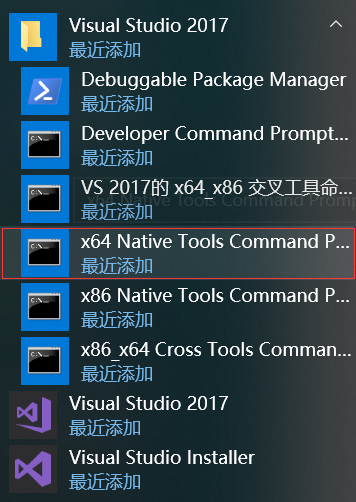

MYNT® EYE S SDK¶
产品¶
简介¶
小觅双目摄像头标准版系列包括小觅双目摄像头标准版（MYNT EYE S），小觅双目摄像头标准入门版（MYNT EYE SE），小觅双目摄像头标准彩色版（MYNT EYE SC），小觅双目摄像头（MYNT® EYE）标准版系列采用的“双目+IMU”的惯性导航方案，可为vSLAM的应用提供精准的六轴互补数据，并且相较其他单一方案拥有更高精度和鲁棒性。
结合自研的帧同步、自动曝光及白平衡控制等摄像头技术，小觅双目摄像头（MYNT® EYE）标准版系列提供基于CUDA的GPU实时加速方案，可以输出高精度同步的图像源，帮助降低算法研发难度，加快算法研发效率。同时，小觅双目摄像头标准版配备六轴传感器（IMU）和红外主动光探测器（IR）。其中，六轴传感器（IMU）可为视觉定位算法的研究提供数据的互补和校正，适用于视觉惯性里程计（VIO）的算法研究，帮助提升定位精度；红外主动光探测器（IR）可以帮助解决室内白墙和无纹理物体的识别难题，提升图像源的识别精度。小觅双目摄像头标准入门版和标准版的区别仅在于入门版不带 IR，为客户提供更低成本的硬件。小觅双目摄像头标准彩色版（MYNT EYE SC）提供 8cm/12cm 可选基线方案，超广角146°FOV，提供更广阔的深度识别范围和精度水平，产品配备彩色镜头、全新升级 BMI088 六轴 IMU 、IR 主动光、I2C时间同步芯片、全局快门等领先的硬件方案，分辨率最高可高达 2560x800@30fps，精度可达厘米级。此外，小觅双目摄像头标准版系列产品还提供丰富的 SDK 接口和 VSLAM 开源项目支持，可以帮助客户迅速进行方案集成，加速实现产品研发进程，实现方案的快速产品化和落地。
小觅双目摄像头标准版系列可广泛应用于视觉定位导航（vSLAM）领域，包括：无人车和机器人的视觉实时定位导航系统、无人机视觉定位系统、无人驾驶避障导航系统、增强现实（AR）、虚拟现实（VR）等；双目也可应用于视觉识别领域，包括：立体人脸识别、三维物体识别、空间运动追踪、三维手势与体感识别等；应用于测量领域，包括：辅助驾驶系统（ADAS）、双目体积计算、工业视觉筛检等。目前，小觅智能已与国内外 500 余家企业客户开展了服务与合作。
为保证摄像头产品输出数据质量，产品出厂时，我们已对双目进行标定。同时，产品通过富士康实验室的高温高湿持续工作、高温高湿持续操作、低温动态老化、高温工作、低温存储、整机冷热冲击、正弦振动、随机振动等多项产品质量测试，保证品质的稳定和可靠。除了产品和技术的研发，亦可直接应用于产品量产，加速从研发到产品化的过程。
外观¶
S1030 尺寸与结构¶
外壳(mm) |
PCBA板(mm) |
|---|---|
165x31.5x29.6 |
149x24 |

摄像头：摄像头传感器镜头，在使用中请注意保护，以避免成像质量下降。
红外结构光发射器及开孔：通过红外结构光可有效解决白墙等无纹理表面的视觉计算。(非 IR 版，此孔保留，但内部无结构光发射装置)
USB Micro-B 接口及固定孔：使用中，插上 USB Micro-B 数据线后，请使用接口端的螺丝紧固接口，以避免使用中损坏接口，也保证数据连接的稳定性。
1/4 英寸标准固定螺孔：用于将双目摄像头固定于摄影三角架等装置。
S2100 尺寸与结构¶
外壳(mm) |
PCBA板(mm) |
|---|---|
125x47x40 |
100x15 |
摄像头：摄像头传感器镜头，在使用中请注意保护，以避免成像质量下降。
USB Micro-B 接口及固定孔：使用中，插上 USB Micro-B 数据线后，请使用接口端的螺丝紧固接口，以避免使用中损坏接口，也保证数据连接的稳定性。
规格¶
S1030-120/Mono¶
产品规格¶
型号 |
S1030-120/Mono |
尺寸 |
165x31.5x31.23mm |
帧率 |
10/15/20/25/30/35/40/45/50/55/60FPS |
分辨率 |
752*480; 376*240 |
深度分辨率 |
Based on CPU/GPU Up to 752*480@60FPS |
像素尺寸 |
6.0*6.0μm |
基线 |
120.0mm |
视角 |
D:146° H:122° V:76° |
焦距 |
2.1mm |
滤镜 |
Dual Pass Filter |
支持IR |
No |
IR可探测距离 |
- |
色彩模式 |
Monochrome |
深度工作距离 |
0.8-5m+ |
曝光方式 |
Global Shutter |
功耗 |
1W@5V DC from USB |
同步精度 |
<1ms (up to 0.05ms) |
IMU频率 |
100/200/250/333/500Hz |
输出数据格式 |
Raw data |
接口 |
USB3.0 |
重量 |
160g |
UVC MODE |
Yes |
软件¶
支持操作系统 |
Windows 10、Ubuntu 14.04/16.04/18.04、ROS indigo/kinetic/melodic、Android 7.0+ |
SDK地址 |
|
开发者支持 |
SDK |
开源项目支持 |
ORB_SLAM2、OKVIS、Vins-Mono、Vins-Fusion、VIORB |
环境¶
运行温度 |
10°C~50°C |
存储温度 |
-20°C~60°C |
湿度 |
10% to 90% non-condensing |
包装¶
包装内容 |
MYNT EYE x1 USB Micro-B Cable x1 |
保修¶
产品保修 |
12 Months Limited Manufacturer’s Warranty |
精度¶
深度测量精度 |
误差不超过4% |
S1030-IR-120/Mono¶
产品规格¶
型号 |
S1030-IR-120/Mono |
尺寸 |
165x31.5x31.23mm |
帧率 |
10/15/20/25/30/35/40/45/50/55/60FPS |
分辨率 |
752*480; 376*240 |
深度分辨率 |
Based on CPU/GPU Up to 752*480@60FPS |
像素尺寸 |
6.0*6.0μm |
基线 |
120.0mm |
视角 |
D:146° H:122° V:76° |
焦距 |
2.1mm |
滤镜 |
Dual Pass Filter |
支持IR |
Yes |
IR可探测距离 |
Up to 3m |
色彩模式 |
Monochrome |
深度工作距离 |
0.8-5m+ |
曝光方式 |
Global Shutter |
功耗 |
1~2.7W@5V DC from USB |
同步精度 |
<1ms (up to 0.05ms) |
IMU频率 |
100/200/250/333/500Hz |
输出数据格式 |
Raw data |
接口 |
USB3.0 |
重量 |
184g |
UVC MODE |
Yes |
软件¶
支持操作系统 |
Windows 10、Ubuntu 14.04/16.04/18.04、ROS indigo/kinetic/melodic、Android 7.0+ |
SDK地址 |
|
开发者支持 |
SDK |
开源项目支持 |
ORB_SLAM2、OKVIS、Vins-Mono、Vins-Fusion、VIORB |
环境¶
运行温度 |
10°C~50°C |
存储温度 |
-20°C~60°C |
湿度 |
10% to 90% non-condensing |
包装¶
包装内容 |
MYNT EYE x1 USB Micro-B Cable x1 |
保修¶
产品保修 |
12 Months Limited Manufacturer’s Warranty |
精度¶
深度测量精度 |
误差不超过4% |
S2100-146/Color¶
产品规格¶
型号 |
S2100-146/Color |
尺寸 |
125x47x26.6mm |
帧率 |
1280x400@10/20/30/60fps 2560x800@10/20/30fps |
分辨率 |
1280x400; 2560x800; |
深度分辨率 |
Based on CPU/GPU Up to 1280*400@60FPS |
像素尺寸 |
3.0*3.0μm |
基线 |
80.0mm |
视角 |
D:141° H:124° V:87° |
焦距 |
0.95mm |
支持IR |
NO |
色彩模式 |
Color |
深度工作距离 |
0.26-3m+ |
快门类型 |
Global Shutter |
功耗 |
1.1W@5V DC from USB |
同步精度 |
<1ms (up to 0.02ms) |
IMU频率 |
200Hz |
输出数据格式 |
YUYV |
接口 |
USB3.0 |
时间同步接口 |
DF50A |
重量 |
62g |
UVC MODE |
Yes |
软件¶
支持操作系统 |
Windows 10、Ubuntu 14.04/16.04/18.04、ROS indigo/kinetic/melodic、Android 7.0+ |
SDK地址 |
|
开发者支持 |
SDK |
开源项目支持 |
ORB_SLAM2、OKVIS、Vins-Mono、Vins-Fusion、VIORB |
环境¶
运行温度 |
-15°C~55°C |
存储温度 |
-20°C~75°C |
湿度 |
0% to 95% non-condensing |
包装¶
包装内容 |
MYNT EYE x1 USB Micro-B Cable x1 |
保修¶
产品保修 |
12 Months Limited Manufacturer’s Warranty |
精度¶
深度测量精度 |
误差不超过4% |

SDK¶
SDK 说明¶
支持平台¶
SDK 是基于 CMake 构建的，用以跨 Linux, Windows 等多个平台。SDK提供两种安装方式：下载安装以及源码编译安装。
已测试可用的平台有：
Windows 10
Ubuntu 18.04.1 / 16.04.6 / 14.04.5
Jetson TX1/TX2 / Xavier
firefly RK3399 测试固件(提取码: y6qs)
警告
由于硬件传输速率要求，务必使用 USB 3.0 接口。另外，虚拟机因其大多存在 USB 驱动兼容性问题，不建议使用。
OpenCV 说明¶
SDK 提供了三层接口，其 OpenCV 依赖情况如下：
api， 上层接口，依赖 OpenCV 。device，中间层接口，不依赖 OpenCV 。uvc，底层接口，不依赖 OpenCV 。
如果不想使用 OpenCV ，你可编辑 <sdk>/cmake/Option.cmake 里的 WITH_API 选项，设为 OFF 就能关闭 api 层代码编译：
option(WITH_API "Build with API layer, need OpenCV" ON)
device 层接口使用样例，请见 device/camera.cc 。
SDK 安装¶
Ubuntu PPA 安装¶
Ubuntu 14.04 |
Ubuntu 16.04 |
Ubuntu 18.04 |
|---|---|---|
|
|
|
x64 PPA安装¶
$ sudo add-apt-repository ppa:slightech/mynt-eye-s-sdk
$ sudo apt-get update
$ sudo apt-get install mynt-eye-s-sdk
armv8 PPA安装¶
$ sudo add-apt-repository ppa:slightech/mynt-eye-s-sdk-arm
$ sudo apt-get update
$ sudo apt-get install mynt-eye-s-sdk
运行样例¶
小技巧
samples 路径: /opt/mynt-eye-s-sdk/samples; tools 路径: /opt/mynt-eye-s-sdk/tools
$ cd /opt/mynt-eye-s-sdk/samples
$ ./api/camera_a
Ubuntu 源码安装¶
Ubuntu 14.04 |
Ubuntu 16.04 |
Ubuntu 18.04 |
|---|---|---|
|
|
|
小技巧
安装SDK前尽量保证系统纯净，其他第三方软件可能会造成库的冲突。
如果是其他 Linux 发行版，不是用的 apt-get 包管理工具，那你准备依赖时不能 make init 自动安装，得自己手动安装了。必要安装项如下：
Linux |
How to install required packages |
|---|---|
Debian based |
sudo apt-get install build-essential cmake git libv4l-dev |
Red Hat based |
sudo yum install make gcc gcc-c++ kernel-devel cmake git libv4l-devel |
Arch Linux |
sudo pacman -S base-devel cmake git v4l-utils |
获取代码¶
sudo apt-get install git
git clone https://github.com/slightech/MYNT-EYE-S-SDK.git
准备依赖¶
cd <sdk> # <sdk> 是指sdk路径
make init
小技巧
如果需要安装ROS，可以不用安装OpenCV/PCL, 以防兼容性问题。 OpenCV 如何编译安装，请见官方文档 Installation in Linux 。或参考如下命令：
[compiler] sudo apt-get install build-essential
[required] sudo apt-get install cmake git libgtk2.0-dev pkg-config libavcodec-dev libavformat-dev libswscale-dev
[optional] sudo apt-get install python-dev python-numpy libtbb2 libtbb-dev libjpeg-dev libpng-dev libtiff-dev libjasper-dev libdc1394-22-dev
$ git clone https://github.com/opencv/opencv.git
$ cd opencv/
$ git checkout tags/3.4.1
$ mkdir _build
$ cd _build/
$ cmake \
-DCMAKE_BUILD_TYPE=RELEASE \
-DCMAKE_INSTALL_PREFIX=/usr/local \
\
-DWITH_CUDA=OFF \
\
-DBUILD_DOCS=OFF \
-DBUILD_EXAMPLES=OFF \
-DBUILD_TESTS=OFF \
-DBUILD_PERF_TESTS=OFF \
..
$ make -j4
$ sudo make install
编译代码¶
小技巧
如果 OpenCV 安装到了自定义目录或想指定某一版本，编译前可如下设置路径：
# OpenCV_DIR is the directory where your OpenCVConfig.cmake exists
export OpenCV_DIR=~/opencv
不然， CMake 会提示找不到 OpenCV 。如果不想依赖 OpenCV ，请阅读 OpenCV 说明 。
编译并安装：
cd <sdk>
make install
最终，默认会安装在 /usr/local 目录。
编译工具¶
cd <sdk>
make tools
安装脚本依赖：
cd <sdk>/tools/
sudo pip install -r requirements.txt
工具和脚本的使用，后续会有介绍。
结语¶
工程要引入 SDK 的话，CMake 可参考 samples/CMakeLists.txt 里的配置。不然，就是直接引入安装目录里的头文件和动态库。
Windows EXE 安装¶
Windows 10 |
|---|
|
下载并安装 SDK¶
小技巧
下载地址： mynteye-s-x.x.x-win-x64-opencv-3.4.3.exe Google Drive 百度网盘(提取码:rj4k) 。
安装完 SDK 的 exe 安装包后，桌面会生成 SDK 根目录的快捷方式。
小技巧
<SDK_ROOT_DIR>是指exe包安装路径
进入 <SDK_ROOT_DIR>\bin\samples\tutorials 目录，双击 get_stereo.exe 运行，即可看到双目实时画面。
如果样例没有运行成功，请先检查一下系统变量PATH中是否成功添加了 <SDK_ROOT_DIR>\3rdparty\opencv\build, <SDK_ROOT_DIR>\bin 路径，如果没有需要手动添加一下。
生成样例工程¶
首先，安装好 Visual Studio 2017 和 CMake 。
接着，进入 <SDK_ROOT_DIR>\samples 目录， 双击 generate.bat 即可生成样例工程。
小技巧
运行样例需要先右键样例，设为启动项目，然后使用Release x64运行
p.s. 样例教程，可见 SDK 主页给出的 Guide 文档。
如何于 Visual Studio 2017 下使用 SDK¶
进入 <SDK_ROOT_DIR>\projects\vs2017 ，见 README.md 说明。
Windows 源码安装¶
Windows 10 |
|---|
|
小技巧
Windows 不直接提供 Visual Studio *.sln 工程文件，需要用 CMake 来构建生成。一是 CMake 跨平台、易配置、可持续维护，二是第三方代码（glog, OpenCV）也都是用的 CMake 构建。
前提条件¶
CMake（提供构建）¶
安装好上述工具后，在命令提示符（Command Prompt）里确认可运行此些命令：
>cmake --version
cmake version 3.10.1
>git --version
git version 2.11.1.windows.1
>doxygen --version
1.8.13
Visual Studio（提供编译）¶
安装好 Visual Studio 后，在其 Visual Studio Command Prompt 里确认可运行如下命令：
>cl
Microsoft (R) C/C++ Optimizing Compiler Version 19.14.26429.4 for x86
>msbuild
Microsoft (R) 生成引擎版本 15.7.179.6572
小技巧
Visual Studio Command Prompt 可以从开始菜单打开，
{kind=link}
也可以从 Visual Studio 的工具菜单里打开，

但如 Visual Studio 2015 工具菜单里可能没有，可以自己添加个。
打开 Tools 的 External Tools… ，然后 Add 如下内容：
Field |
Value |
|---|---|
Title |
Visual Studio Command Prompt |
Command |
|
Arguments |
|
Initial Directory |
|
Visual Studio Command Prompt 里就可以用编译命令 cl link lib msbuild 等(需要先完成``MSYS2``和``获取代码``步骤)，
获取代码¶
git clone https://github.com/slightech/MYNT-EYE-S-SDK.git
准备依赖¶
>cd <sdk> # <sdk> 是指sdk路径
>make init
Make init
Init deps
Install cmd: pacman -S
Install deps: git clang-format
pacman -S clang-format (not exists)
error: target not found: clang-format
pip install --upgrade autopep8 cpplint pylint requests
...
Init git hooks
ERROR: clang-format-diff is not installed!
Expect cmake version >= 3.0
cmake version 3.10.1
小技巧
OpenCV 官方提供了 exe 进行安装。如果想从源码编译，请见官方文档 Installation in Windows 。或参考如下命令：
>git clone https://github.com/opencv/opencv.git
>cd opencv
>git checkout tags/3.4.1
>cd opencv
>mkdir _build
>cd _build
>cmake ^
-D CMAKE_BUILD_TYPE=RELEASE ^
-D CMAKE_INSTALL_PREFIX=C:/opencv ^
-D WITH_CUDA=OFF ^
-D BUILD_DOCS=OFF ^
-D BUILD_EXAMPLES=OFF ^
-D BUILD_TESTS=OFF ^
-D BUILD_PERF_TESTS=OFF ^
-G "Visual Studio 15 2017 Win64" ^
..
>msbuild ALL_BUILD.vcxproj /property:Configuration=Release
>msbuild INSTALL.vcxproj /property:Configuration=Release
msbuild 路径可参考 ``C:\Program Files (x86)\Microsoft Visual Studio\2017\Community\MSBuild\15.0\Bin\MSBuild.exe``
编译代码¶
小技巧
如果 OpenCV 安装到了自定义目录或想指定某一版本，编译前可如下设置路径：
# OpenCV_DIR 为 OpenCVConfig.cmake 所在目录
set OpenCV_DIR=C:\opencv\_build
不然， CMake 会提示找不到 OpenCV 。如果不想依赖 OpenCV ，请阅读 OpenCV 说明 。
编译并安装：
cd <sdk>
make install
最终，默认会安装在 <sdk>/_install 目录。
编译样例¶
cd <sdk>
make samples
运行样例：
.\samples\_output\bin\api\camera_a.bat
教程样例，请阅读 SDK 工程引用 和 SDK 控制样例 。
小技巧
所有编译出的样例程序 exe 都会有个相应的 bat 。 bat 会临时设定下系统环境变量，然后再运行 exe 。所以建议执行 bat 运行程序。
如果直接运行 exe 的话，可能会报 dll 找不到。说明你需要将 <sdk>\_install\bin %OPENCV_DIR%\bin 加入到系统环境变量 PATH 里。
OpenCV 如何设定环境变量，可见官方文档 Set the OpenCV environment variable and add it to the systems path 。
编译工具¶
cd <sdk>
make tools
工具和脚本的使用，后续会有介绍。
小技巧
脚本为 Python 实现，需要先安装 Python 及其包管理工具 pip ，然后再如下安装依赖：
cd <sdk>\tools
pip install -r requirements.txt
注：MSYS2 里也带了 Python ，但测试未能安装上 matplotlib 。
结语¶
工程要引入 SDK 的话，CMake 可参考 samples/CMakeLists.txt 里的配置。不然，就是直接引入安装目录里的头文件和动态库。
ROS Wrapper 安装¶
ROS Melodic |
ROS Kinetic |
ROS Indigo |
|---|---|---|
|
|
|
环境准备¶
ROS Melodic (Ubuntu 18.04)¶
sudo sh -c 'echo "deb http://packages.ros.org/ros/ubuntu $(lsb_release -sc) main" > /etc/apt/sources.list.d/ros-latest.list'
sudo apt-key adv --keyserver hkp://ha.pool.sks-keyservers.net:80 --recv-key 421C365BD9FF1F717815A3895523BAEEB01FA116
sudo apt update
sudo apt install ros-melodic-desktop-full
sudo rosdep init
rosdep update
ROS Kinetic (Ubuntu 16.04)¶
wget https://raw.githubusercontent.com/oroca/oroca-ros-pkg/master/ros_install.sh && \
chmod 755 ./ros_install.sh && bash ./ros_install.sh catkin_ws kinetic
ROS Indigo (Ubuntu 14.04)¶
wget https://raw.githubusercontent.com/oroca/oroca-ros-pkg/master/ros_install.sh && \
chmod 755 ./ros_install.sh && bash ./ros_install.sh catkin_ws indigo
编译代码¶
cd <sdk>
make ros
运行节点¶
source wrappers/ros/devel/setup.bash
roslaunch mynt_eye_ros_wrapper mynteye.launch # 这个节点没有图像显示
运行节点，同时打开 RViz 预览：
source wrappers/ros/devel/setup.bash
roslaunch mynt_eye_ros_wrapper display.launch
测试服务¶
运行节点，有提供获取设备信息服务，如下测试：
$ source wrappers/ros/devel/setup.bash
$ rosrun mynt_eye_ros_wrapper get_device_info.py
LENS_TYPE: 0000
SPEC_VERSION: 1.0
NOMINAL_BASELINE: 120
HARDWARE_VERSION: 2.0
IMU_TYPE: 0000
SERIAL_NUMBER: 0610243700090720
FIRMWARE_VERSION: 2.0
DEVICE_NAME: MYNT-EYE-S1000
常见问题 - ROS Indigo¶
make ros 时 libopencv 找不到¶
make[3]: *** No rule to make target `/usr/lib/x86_64-linux-gnu/libopencv_videostab.so.2.4.8', needed by `/home/john/Workspace/MYNT-EYE-S-SDK/wrappers/ros/devel/lib/libmynteye_wrapper.so'. Stop.
Solution 1) 安装 OpenCV 2:
sudo apt-get update
sudo apt-get install libcv-dev
Solution 2) 安装 OpenCV 3 并重编 cv_bridge:
sudo apt-get install ros-indigo-opencv3
git clone https://github.com/ros-perception/vision_opencv.git
mv vision_opencv/cv_bridge/ MYNT-EYE-S-SDK/wrappers/ros/src/
然后，重新 make ros 。
SDK 数据样例¶
获取设备信息¶
通过 API 的 GetInfo() 函数，就可以获取当前打开设备的各类信息值。
参考代码片段：
auto &&api = API::Create(argc, argv);
LOG(INFO) << "Device name: " << api->GetInfo(Info::DEVICE_NAME);
LOG(INFO) << "Serial number: " << api->GetInfo(Info::SERIAL_NUMBER);
LOG(INFO) << "Firmware version: " << api->GetInfo(Info::FIRMWARE_VERSION);
LOG(INFO) << "Hardware version: " << api->GetInfo(Info::HARDWARE_VERSION);
LOG(INFO) << "Spec version: " << api->GetInfo(Info::SPEC_VERSION);
LOG(INFO) << "Lens type: " << api->GetInfo(Info::LENS_TYPE);
LOG(INFO) << "IMU type: " << api->GetInfo(Info::IMU_TYPE);
LOG(INFO) << "Nominal baseline: " << api->GetInfo(Info::NOMINAL_BASELINE);
参考运行结果，于 Linux 上：
$ ./samples/_output/bin/tutorials/get_device_info
I0503 16:40:21.109391 32106 utils.cc:13] Detecting MYNT EYE devices
I0503 16:40:21.604116 32106 utils.cc:20] MYNT EYE devices:
I0503 16:40:21.604127 32106 utils.cc:24] index: 0, name: MYNT-EYE-S1000
I0503 16:40:21.604142 32106 utils.cc:30] Only one MYNT EYE device, select index: 0
I0503 16:40:21.615054 32106 get_device_info.cc:10] Device name: MYNT-EYE-S1000
I0503 16:40:21.615113 32106 get_device_info.cc:11] Serial number: 0610243700090720
I0503 16:40:21.615129 32106 get_device_info.cc:12] Firmware version: 2.0
I0503 16:40:21.615139 32106 get_device_info.cc:13] Hardware version: 2.0
I0503 16:40:21.615146 32106 get_device_info.cc:14] Spec version: 1.0
I0503 16:40:21.615155 32106 get_device_info.cc:15] Lens type: 0000
I0503 16:40:21.615164 32106 get_device_info.cc:16] IMU type: 0000
I0503 16:40:21.615171 32106 get_device_info.cc:17] Nominal baseline: 120
完整代码样例，请见 get_device_info.cc 。
获取图像标定参数¶
通过 API 的 GetIntrinsics() GetExtrinsics() 函数，就可以获取当前打开设备的图像标定参数和相机使用的模型。
小技巧
参数模版可以参考 tools/writer/config 下的参数文件，其中
S2100/S210A 对应的相机参数在 tools/writer/config/S210A
S1030 对应的相机参数在 tools/writer/config/S1030
equidistant表示等距模型，pinhole表示针孔模型
注解
相机内参Intrinsics: k表示等距畸变系数，mu,mv对应焦距,v,u对应主点坐标。 相机外参Extrinsics(从右目往左目): rotation表示旋转矩阵， translation表示平移矩阵。 D、K、R、P 分别为畸变参数，内参矩阵，矫正矩阵，投影矩阵。 参考链接: ros CameraInfo
参考代码片段：
auto &&api = API::Create(argc, argv);
LOG(INFO) << "Intrinsics left: {" << *api->GetIntrinsicsBase(Stream::LEFT)
<< "}";
LOG(INFO) << "Intrinsics right: {" << *api->GetIntrinsicsBase(Stream::RIGHT)
<< "}";
LOG(INFO) << "Extrinsics right to left: {"
<< api->GetExtrinsics(Stream::RIGHT, Stream::LEFT) << "}";
参考运行结果，于 Linux 上：
$ ./samples/_output/bin/tutorials/get_img_params
I/utils.cc:48 MYNT EYE devices:
I/utils.cc:51 index: 0, name: MYNT-EYE-S1030, sn: 4B4C192400090712, firmware: 2.4
I/utils.cc:60 Only one MYNT EYE device, select index: 0
I/synthetic.cc:59 camera calib model: kannala_brandt
I/utils.cc:93 MYNT EYE requests:
I/utils.cc:96 index: 0, request: width: 752, height: 480, format: Format::YUYV, fps: 60
I/utils.cc:96 index: 1, request: width: 376, height: 240, format: Format::YUYV, fps: 60
I/utils.cc:107 There are 2 stream requests, select index:
0
I/get_img_params.cc:44 Intrinsics left: {equidistant, width: 752, height: 480, k2: 0.00986113697985857, k3: -0.11937208025856659, k4: 0.19092250072175385, k5: -0.10168315832257743, mu: 356.41566867259672335, mv: 356.31078130432149464, u0: 375.76739787805968263, v0: 246.20025492033516912}
I/get_img_params.cc:45 Intrinsics right: {equidistant, width: 752, height: 480, k2: -0.02246312175999786, k3: 0.01303393297719630, k4: -0.01735983686524734, k5: 0.00675132874903371, mu: 357.96820061652590539, mv: 357.76889287108474491, u0: 397.09281703352422710, v0: 258.93978588846073308}
I/get_img_params.cc:46 Extrinsics right to left: {rotation: [0.99997489222742053, 0.00041828202737396, -0.00707389248605010, -0.00042920419615213, 0.99999871813992847, -0.00154256353448567, 0.00707323819170721, 0.00154556094848940, 0.99997378992793495], translation: [-120.01607586757218371, 0.34488126401045993, 0.64552185106557303]}
ROSMsgInfoPair:
left:
width: 752, height: 480
distortion_model: KANNALA_BRANDT
D: 0.00986114,-0.119372,0.190923,-0.101683,0,
K: 356.416,0,375.767,0,356.311,246.2,0,0,1,
R: 0.999919,-0.00246361,-0.0124477,0.00245407,0.999997,-0.000781093,0.0124496,0.000750482,0.999922,
P: 357.04,0,511.114,0,0,357.04,311.965,0,0,0,1,0,
right:
width: 752, height: 480
distortion_model: KANNALA_BRANDT
D: -0.0224631,0.0130339,-0.0173598,0.00675133,0,
K: 357.968,0,397.093,0,357.769,258.94,0,0,1,
R: 0.999981,-0.00287357,-0.00537853,0.00287782,0.999996,0.000781842,0.00537626,-0.000797306,0.999985,
P: 357.04,0,511.114,-42851.3,0,357.04,311.965,0,0,0,1,0,
完整代码样例，请见 get_img_params.cc 。
获取 IMU 标定参数¶
通过 API 的 GetMotionIntrinsics() GetMotionExtrinsics() 函数，就可以获取当前打开设备的 IMU 标定参数。
参考代码片段：
auto &&api = API::Create(argc, argv);
LOG(INFO) << "Motion intrinsics: {" << api->GetMotionIntrinsics() << "}";
LOG(INFO) << "Motion extrinsics left to imu: {"
<< api->GetMotionExtrinsics(Stream::LEFT) << "}";
完整代码样例，请见 get_imu_params.cc 。
获取双目原始图像¶
API 提供了 Start() Stop() 函数，用于开始或停止捕获数据。如果只捕获图像数据的话，参数用 Source::VIDEO_STREAMING 即可。
开始捕获数据后，首先调用 WaitForStreams() 函数，等待捕获到数据。接着，通过 GetStreamData() 函数，就能获取想要的数据了。
参考代码片段：
auto &&api = API::Create(argc, argv);
api->Start(Source::VIDEO_STREAMING);
cv::namedWindow("frame");
while (true) {
api->WaitForStreams();
auto &&left_data = api->GetStreamData(Stream::LEFT);
auto &&right_data = api->GetStreamData(Stream::RIGHT);
cv::Mat img;
cv::hconcat(left_data.frame, right_data.frame, img);
cv::imshow("frame", img);
char key = static_cast<char>(cv::waitKey(1));
if (key == 27 || key == 'q' || key == 'Q') { // ESC/Q
break;
}
}
api->Stop(Source::VIDEO_STREAMING);
上述代码，用了 OpenCV 来显示图像。选中显示窗口时，按 ESC/Q 就会结束程序。
完整代码样例，请见 get_stereo.cc 。
获取双目纠正图像¶
API 提供的 GetStreamData() 默认仅能获取到硬件的原始数据，例如双目原始图像。
而双目纠正图像，属于上层合成数据。此类数据，需要事先 EnableStreamData() 启用，然后 GetStreamData() 才能获取到。
另外，WaitForStreams() 等待的是关键原始数据。刚开始时，合成数据可能还在处理，取出的是空值，所以需要判断下不为空。
小技巧
如果想要合成数据一生成就立即获取到，请参阅 从回调接口获取数据 。
参考代码片段：
auto &&api = API::Create(argc, argv);
api->EnableStreamData(Stream::LEFT_RECTIFIED);
api->EnableStreamData(Stream::RIGHT_RECTIFIED);
api->Start(Source::VIDEO_STREAMING);
cv::namedWindow("frame");
while (true) {
api->WaitForStreams();
auto &&left_data = api->GetStreamData(Stream::LEFT_RECTIFIED);
auto &&right_data = api->GetStreamData(Stream::RIGHT_RECTIFIED);
if (!left_data.frame.empty() && !right_data.frame.empty()) {
cv::Mat img;
cv::hconcat(left_data.frame, right_data.frame, img);
cv::imshow("frame", img);
}
char key = static_cast<char>(cv::waitKey(1));
if (key == 27 || key == 'q' || key == 'Q') { // ESC/Q
break;
}
}
api->Stop(Source::VIDEO_STREAMING);
上述代码，用了 OpenCV 来显示图像。选中显示窗口时，按 ESC/Q 就会结束程序。
完整代码样例，请见 get_stereo_rectified.cc 。
获取视差图像¶
视差图像，属于上层合成数据。需要事先 EnableStreamData() 启用，然后 GetStreamData() 获取。另外，判断不为空后再使用。
详细流程说明，请参阅 获取双目原始图像 获取双目纠正图像 。
另外，推荐使用插件计算深度：深度图效果会更好，并且运算速度更快。具体请参阅 使用插件获取数据 。
小技巧
其中 SetDisparityComputingMethodType 方法用于改变视差计算方式,目前有 BM/SGBM 两种方式可供选择。
参考代码片段：
auto &&api = API::Create(argc, argv);
// api->EnableStreamData(Stream::DISPARITY);
api->EnableStreamData(Stream::DISPARITY_NORMALIZED);
api->SetDisparityComputingMethodType(DisparityComputingMethod::BM);
api->Start(Source::VIDEO_STREAMING);
cv::namedWindow("frame");
// cv::namedWindow("disparity");
cv::namedWindow("disparity_normalized");
while (true) {
api->WaitForStreams();
auto &&left_data = api->GetStreamData(Stream::LEFT);
auto &&right_data = api->GetStreamData(Stream::RIGHT);
cv::Mat img;
cv::hconcat(left_data.frame, right_data.frame, img);
cv::imshow("frame", img);
// auto &&disp_data = api->GetStreamData(Stream::DISPARITY);
// if (!disp_data.frame.empty()) {
// cv::imshow("disparity", disp_data.frame);
// }
auto &&disp_norm_data = api->GetStreamData(Stream::DISPARITY_NORMALIZED);
if (!disp_norm_data.frame.empty()) {
cv::imshow("disparity_normalized", disp_norm_data.frame); // CV_8UC1
}
char key = static_cast<char>(cv::waitKey(1));
if (key == 27 || key == 'q' || key == 'Q') { // ESC/Q
break;
}
}
api->Stop(Source::VIDEO_STREAMING);
上述代码，用了 OpenCV 来显示图像。选中显示窗口时，按 ESC/Q 就会结束程序。
完整代码样例，请见 get_disparity.cc 。
获取深度图像¶
深度图像，属于上层合成数据。需要事先 EnableStreamData() 启用，然后 GetStreamData() 获取。深度数据的格式为CV_16UC1。另外，判断不为空后再使用。
详细流程说明，请参阅 获取双目原始图像 获取双目纠正图像 。
另外，推荐使用插件计算深度：深度图效果会更好，并且运算速度更快。具体请参阅 使用插件获取数据 。
参考代码片段：
auto &&api = API::Create(argc, argv);
api->EnableStreamData(Stream::DEPTH);
api->Start(Source::VIDEO_STREAMING);
cv::namedWindow("frame");
cv::namedWindow("depth");
while (true) {
api->WaitForStreams();
auto &&left_data = api->GetStreamData(Stream::LEFT);
auto &&right_data = api->GetStreamData(Stream::RIGHT);
cv::Mat img;
cv::hconcat(left_data.frame, right_data.frame, img);
cv::imshow("frame", img);
auto &&depth_data = api->GetStreamData(Stream::DEPTH);
if (!depth_data.frame.empty()) {
cv::imshow("depth", depth_data.frame); // CV_16UC1
}
char key = static_cast<char>(cv::waitKey(1));
if (key == 27 || key == 'q' || key == 'Q') { // ESC/Q
break;
}
}
api->Stop(Source::VIDEO_STREAMING);
上述代码，用了 OpenCV 来显示图像。选中显示窗口时，按 ESC/Q 就会结束程序。
完整代码样例，请见 get_depth.cc 。
小技巧
预览深度图某区域的值，请见 get_depth_with_region.cc 。
获取点云图像¶
点云图像，属于上层合成数据。需要事先 EnableStreamData() 启用，然后 GetStreamData() 获取。另外，判断不为空后再使用。
详细流程说明，请参阅 获取双目原始图像 获取双目纠正图像 。
另外，推荐使用插件计算深度：深度图效果会更好，并且运算速度更快。具体请参阅 使用插件获取数据 。
参考代码片段：
auto &&api = API::Create(argc, argv);
api->EnableStreamData(Stream::POINTS);
api->Start(Source::VIDEO_STREAMING);
cv::namedWindow("frame");
PCViewer pcviewer;
while (true) {
api->WaitForStreams();
auto &&left_data = api->GetStreamData(Stream::LEFT);
auto &&right_data = api->GetStreamData(Stream::RIGHT);
cv::Mat img;
cv::hconcat(left_data.frame, right_data.frame, img);
cv::imshow("frame", img);
auto &&points_data = api->GetStreamData(Stream::POINTS);
if (!points_data.frame.empty()) {
pcviewer.Update(points_data.frame);
}
char key = static_cast<char>(cv::waitKey(1));
if (key == 27 || key == 'q' || key == 'Q') { // ESC/Q
break;
}
if (pcviewer.WasStopped()) {
break;
}
}
api->Stop(Source::VIDEO_STREAMING);
上述代码，用了 PCL 来显示点云。关闭点云窗口时，也会结束程序。
完整代码样例，请见 get_points.cc 。
注意
准备好了 PCL 库，编译教程样例时才会有此例子。如果 PCL 库安装到了自定义目录，那么请打开 tutorials/CMakeLists.txt ，找到 find_package(PCL) ，把 PCLConfig.cmake 所在目录添加进 CMAKE_PREFIX_PATH 。
获取 IMU 数据¶
API 提供了 Start() Stop() 函数，用于开始或停止捕获数据。要捕获 IMU 数据的话，参数用 Source::MOTION_TRACKING 。或者 Source::ALL 同时捕获图像和 IMU 数据。
开始捕获数据后，需要 EnableMotionDatas() 启用缓存，才能通过 GetMotionDatas() 函数获取到 IMU 数据。否则，只能通过回调接口得到 IMU 数据，请参阅 从回调接口获取数据 。
参考代码片段：
auto &&api = API::Create(argc, argv);
// Enable this will cache the motion datas until you get them.
api->EnableMotionDatas();
api->Start(Source::ALL);
CVPainter painter;
cv::namedWindow("frame");
while (true) {
api->WaitForStreams();
auto &&left_data = api->GetStreamData(Stream::LEFT);
auto &&right_data = api->GetStreamData(Stream::RIGHT);
cv::Mat img;
cv::hconcat(left_data.frame, right_data.frame, img);
auto &&motion_datas = api->GetMotionDatas();
/*
for (auto &&data : motion_datas) {
LOG(INFO) << "Imu frame_id: " << data.imu->frame_id
<< ", timestamp: " << data.imu->timestamp
<< ", accel_x: " << data.imu->accel[0]
<< ", accel_y: " << data.imu->accel[1]
<< ", accel_z: " << data.imu->accel[2]
<< ", gyro_x: " << data.imu->gyro[0]
<< ", gyro_y: " << data.imu->gyro[1]
<< ", gyro_z: " << data.imu->gyro[2]
<< ", temperature: " << data.imu->temperature;
}
*/
painter.DrawImgData(img, *left_data.img);
if (!motion_datas.empty()) {
painter.DrawImuData(img, *motion_datas[0].imu);
}
cv::imshow("frame", img);
char key = static_cast<char>(cv::waitKey(1));
if (key == 27 || key == 'q' || key == 'Q') { // ESC/Q
break;
}
}
api->Stop(Source::ALL);
上述代码，用了 OpenCV 来显示图像和数据。选中显示窗口时，按 ESC/Q 就会结束程序。
完整代码样例，请见 get_imu.cc 。
获取时间戳对应的 IMU 数据¶
如果想让获取到的图像的时间戳，在获取到的 IMU 数据的时间戳中间，保持对应关系，可以通过 API 提供的 EnableTimestampCorrespondence() 函数，启用此功能。
参考代码片段：
auto &&api = API::Create(argc, argv);
// Enable motion datas with timestamp correspondence of some stream
api->EnableTimestampCorrespondence(Stream::LEFT);
api->Start(Source::ALL);
cv::namedWindow("frame");
while (true) {
api->WaitForStreams();
auto &&left_data = api->GetStreamData(Stream::LEFT);
auto &&right_data = api->GetStreamData(Stream::RIGHT);
auto img_stamp = left_data.img->timestamp;
LOG(INFO) << "Img timestamp: " << img_stamp
<< ", diff_prev=" << (img_stamp - prev_img_stamp);
prev_img_stamp = img_stamp;
cv::Mat img;
cv::hconcat(left_data.frame, right_data.frame, img);
auto &&motion_datas = api->GetMotionDatas();
LOG(INFO) << "Imu count: " << motion_datas.size();
for (auto &&data : motion_datas) {
auto imu_stamp = data.imu->timestamp;
LOG(INFO) << "Imu timestamp: " << imu_stamp
<< ", diff_prev=" << (imu_stamp - prev_imu_stamp)
<< ", diff_img=" << (1.f + imu_stamp - img_stamp);
prev_imu_stamp = imu_stamp;
}
LOG(INFO);
cv::imshow("frame", img);
char key = static_cast<char>(cv::waitKey(1));
if (key == 27 || key == 'q' || key == 'Q') { // ESC/Q
break;
}
}
api->Stop(Source::ALL);
参考运行结果，于 Linux 上：
$ ./samples/_output/bin/tutorials/get_imu_correspondence
I/utils.cc:30 Detecting MYNT EYE devices
I/utils.cc:40 MYNT EYE devices:
I/utils.cc:43 index: 0, name: MYNT-EYE-S1030, sn: 0281351000090807
I/utils.cc:51 Only one MYNT EYE device, select index: 0
I/synthetic.cc:126 camera calib model: kannala_brandt
I/utils.cc:79 MYNT EYE devices:
I/utils.cc:82 index: 0, request: width: 752, height: 480, format: Format::YUYV, fps: 60
I/utils.cc:87 Only one stream request, select index: 0
I/get_imu_correspondence.cc:50 Img timestamp: 171323050, diff_prev=39990
I/get_imu_correspondence.cc:58 Imu count: 13
I/get_imu_correspondence.cc:61 Imu timestamp: 171318710, diff_prev=171318710, diff_img=-4352
I/get_imu_correspondence.cc:61 Imu timestamp: 171320730, diff_prev=2020, diff_img=-2320
I/get_imu_correspondence.cc:61 Imu timestamp: 171322750, diff_prev=2020, diff_img=-304
I/get_imu_correspondence.cc:61 Imu timestamp: 171324770, diff_prev=2020, diff_img=1712
I/get_imu_correspondence.cc:61 Imu timestamp: 171326790, diff_prev=2020, diff_img=3728
I/get_imu_correspondence.cc:61 Imu timestamp: 171328800, diff_prev=2010, diff_img=5744
I/get_imu_correspondence.cc:61 Imu timestamp: 171330810, diff_prev=2010, diff_img=7760
I/get_imu_correspondence.cc:61 Imu timestamp: 171332840, diff_prev=2030, diff_img=9776
I/get_imu_correspondence.cc:61 Imu timestamp: 171334860, diff_prev=2020, diff_img=11808
I/get_imu_correspondence.cc:61 Imu timestamp: 171336880, diff_prev=2020, diff_img=13824
I/get_imu_correspondence.cc:61 Imu timestamp: 171338900, diff_prev=2020, diff_img=15840
I/get_imu_correspondence.cc:61 Imu timestamp: 171340920, diff_prev=2020, diff_img=17872
I/get_imu_correspondence.cc:61 Imu timestamp: 171342930, diff_prev=2010, diff_img=19872
I/get_imu_correspondence.cc:66
I/get_imu_correspondence.cc:50 Img timestamp: 171403040, diff_prev=79990
I/get_imu_correspondence.cc:58 Imu count: 20
I/get_imu_correspondence.cc:61 Imu timestamp: 171383310, diff_prev=40380, diff_img=-19728
I/get_imu_correspondence.cc:61 Imu timestamp: 171385330, diff_prev=2020, diff_img=-17712
I/get_imu_correspondence.cc:61 Imu timestamp: 171387350, diff_prev=2020, diff_img=-15696
I/get_imu_correspondence.cc:61 Imu timestamp: 171389370, diff_prev=2020, diff_img=-13664
I/get_imu_correspondence.cc:61 Imu timestamp: 171391380, diff_prev=2010, diff_img=-11664
I/get_imu_correspondence.cc:61 Imu timestamp: 171393390, diff_prev=2010, diff_img=-9648
I/get_imu_correspondence.cc:61 Imu timestamp: 171395420, diff_prev=2030, diff_img=-7616
I/get_imu_correspondence.cc:61 Imu timestamp: 171397440, diff_prev=2020, diff_img=-5600
I/get_imu_correspondence.cc:61 Imu timestamp: 171399460, diff_prev=2020, diff_img=-3584
I/get_imu_correspondence.cc:61 Imu timestamp: 171401480, diff_prev=2020, diff_img=-1568
I/get_imu_correspondence.cc:61 Imu timestamp: 171403500, diff_prev=2020, diff_img=464
I/get_imu_correspondence.cc:61 Imu timestamp: 171405510, diff_prev=2010, diff_img=2464
I/get_imu_correspondence.cc:61 Imu timestamp: 171407520, diff_prev=2010, diff_img=4480
I/get_imu_correspondence.cc:61 Imu timestamp: 171409540, diff_prev=2020, diff_img=6496
I/get_imu_correspondence.cc:61 Imu timestamp: 171411570, diff_prev=2030, diff_img=8528
I/get_imu_correspondence.cc:61 Imu timestamp: 171413590, diff_prev=2020, diff_img=10544
I/get_imu_correspondence.cc:61 Imu timestamp: 171415610, diff_prev=2020, diff_img=12576
I/get_imu_correspondence.cc:61 Imu timestamp: 171417630, diff_prev=2020, diff_img=14592
I/get_imu_correspondence.cc:61 Imu timestamp: 171419650, diff_prev=2020, diff_img=16608
I/get_imu_correspondence.cc:61 Imu timestamp: 171421660, diff_prev=2010, diff_img=18624
完整代码样例，请见 get_imu_correspondence.cc 。
从回调接口获取数据¶
API 提供了 SetStreamCallback() SetMotionCallback() 函数，来设定各类数据的回调。
注意
一定不要阻塞回调。如果需要长时间处理数据，请将回调作为数据生产者。
参考代码片段：
auto &&api = API::Create(argc, argv);
// Attention: must not block the callbacks.
// Get left image from callback
std::atomic_uint left_count(0);
api->SetStreamCallback(
Stream::LEFT, [&left_count](const api::StreamData &data) {
CHECK_NOTNULL(data.img);
++left_count;
});
// Get depth image from callback
api->EnableStreamData(Stream::DEPTH);
std::atomic_uint depth_count(0);
cv::Mat depth;
std::mutex depth_mtx;
api->SetStreamCallback(
Stream::DEPTH,
[&depth_count, &depth, &depth_mtx](const api::StreamData &data) {
UNUSED(data)
++depth_count;
{
std::lock_guard<std::mutex> _(depth_mtx);
depth = data.frame;
}
});
// Get motion data from callback
std::atomic_uint imu_count(0);
std::shared_ptr<mynteye::ImuData> imu;
std::mutex imu_mtx;
api->SetMotionCallback(
[&imu_count, &imu, &imu_mtx](const api::MotionData &data) {
CHECK_NOTNULL(data.imu);
++imu_count;
{
std::lock_guard<std::mutex> _(imu_mtx);
imu = data.imu;
}
});
api->Start(Source::ALL);
CVPainter painter;
cv::namedWindow("frame");
cv::namedWindow("depth");
unsigned int depth_num = 0;
while (true) {
api->WaitForStreams();
auto &&left_data = api->GetStreamData(Stream::LEFT);
auto &&right_data = api->GetStreamData(Stream::RIGHT);
// Concat left and right as img
cv::Mat img;
cv::hconcat(left_data.frame, right_data.frame, img);
// Draw img data and size
painter.DrawImgData(img, *left_data.img);
// Draw imu data
if (imu) {
std::lock_guard<std::mutex> _(imu_mtx);
painter.DrawImuData(img, *imu);
}
// Draw counts
std::ostringstream ss;
ss << "left: " << left_count << ", depth: " << depth_count
<< ", imu: " << imu_count;
painter.DrawText(img, ss.str(), CVPainter::BOTTOM_RIGHT);
// Show img
cv::imshow("frame", img);
// Show depth
if (!depth.empty()) {
// Is the depth a new one?
if (depth_num != depth_count || depth_num == 0) {
std::lock_guard<std::mutex> _(depth_mtx);
depth_num = depth_count;
// LOG(INFO) << "depth_num: " << depth_num;
ss.str("");
ss.clear();
ss << "depth: " << depth_count;
painter.DrawText(depth, ss.str());
cv::imshow("depth", depth); // CV_16UC1
}
}
char key = static_cast<char>(cv::waitKey(1));
if (key == 27 || key == 'q' || key == 'Q') { // ESC/Q
break;
}
}
api->Stop(Source::ALL);
上述代码，用了 OpenCV 来显示图像和数据。选中显示窗口时，按 ESC/Q 就会结束程序。
完整代码样例，请见 get_from_callbacks.cc 。
使用插件获取数据¶
API 提供了 EnablePlugin() 函数，以启用某路径下的插件。
官方目前提供了些计算双目视差的插件，在 MYNTEYE_BOX 的 Plugins 目录内。
Plugins/
├─linux-x86_64/
│ ├─libplugin_b_ocl1.2_opencv3.4.0.so
│ ├─libplugin_g_cuda9.1_opencv2.4.13.5.so
│ ├─libplugin_g_cuda9.1_opencv3.3.1.so
│ └─libplugin_g_cuda9.1_opencv3.4.0.so
├─tegra-armv8/
└─win-x86_64/
目录
linux-x86_64表明了系统和架构。可从系统信息或
uname -a得知你的 CPU 架构。
库名
libplugin_*表明了插件标识和第三方依赖。bg是插件标识，说明用了不同算法。ocl1.2表明依赖了OpenCL 1.2，如果存在。cuda9.1表明依赖了CUDA 9.1，如果存在。opencv3.4.0表明依赖了OpenCV 3.4.0，如果存在。mynteye2.0.0表明依赖了MYNT EYE SDK 2.0.0，如果存在。
首先，根据具体情况，选择你想测试使用的插件。如果依赖了第三方，那么请安装一致的版本。
然后，参考如下代码启用插件：
auto &&api = API::Create(argc, argv);
api->EnablePlugin("plugins/linux-x86_64/libplugin_g_cuda9.1_opencv3.4.0.so");
路径可以是绝对路径，也可以是相对路径（相对于当前工作目录）。
最终，和之前一样调用 API 获取数据就行了。
小技巧
如果没有启用插件的话， api->Start(Source::VIDEO_STREAMING); 时会自动在 <sdk>/plugins/<platform> 目录里找合适的插件去加载。
换句话说，可以把当前平台的插件目录整个搬进 <sdk>/plugins 目录内。安装好对应的 CUDA OpenCV 等插件依赖后重编译，此后运行 API 层接口程序，就会自动加载官方插件了。
运行前，请执行如下命令，以确保能搜索到插件的依赖库：
# Linux
export LD_LIBRARY_PATH=/usr/local/lib:$LD_LIBRARY_PATH
# /usr/local/lib 指依赖库所在路径
# macOS
export DYLD_LIBRARY_PATH=/usr/local/lib:$DYLD_LIBRARY_PATH
# /usr/local/lib 指依赖库所在路径
# Windows
set PATH=C:\opencv\x64\vc14\bin;%PATH%
# 或者，添加进系统环境变量 Path 里。
此外，可执行如下命令，检查是否能搜索到插件的依赖库：
# Linux
ldd *.so
# *.so 指具体插件路径
# macOS
otool -L *.dylib
# *.dylib 指具体插件路径
# Windows
# 请下载如 Dependency Walker ，打开 DLL 。
如果找不到插件的依赖库，加载时将会报错 “Open plugin failed” 。
完整代码样例，请见 get_with_plugin.cc 。
小技巧
Linux 上也可以把依赖库路径加入系统环境，编译出的程序就可以直接运行了（不需要于终端里 export LD_LIBRARY_PATH 再运行）。
新建
/etc/ld.so.conf.d/libmynteye.conf文件，写入依赖库路径。终端里执行
sudo /sbin/ldconfig命令，刷新缓存。
保存单张图片¶
按 “Space” “s” “S” 键来保存图片。
参考代码片段：
api->Start(Source::VIDEO_STREAMING);
cv::namedWindow("frame");
std::int32_t count = 0;
std::cout << "Press 'Space' 's' 'S' to save image." << std::endl;
while (true) {
api->WaitForStreams();
auto &&left_data = api->GetStreamData(Stream::LEFT);
auto &&right_data = api->GetStreamData(Stream::RIGHT);
if (!left_data.frame.empty() && !right_data.frame.empty()) {
cv::Mat img;
cv::hconcat(left_data.frame, right_data.frame, img);
cv::imshow("frame", img);
}
char key = static_cast<char>(cv::waitKey(1));
if (key == 27 || key == 'q' || key == 'Q') { // ESC/Q
break;
} else if (key == 32 || key == 's' || key == 'S') {
if (!left_data.frame.empty() && !right_data.frame.empty()) {
char l_name[20];
char r_name[20];
++count;
snprintf(l_name, sizeof(l_name), "left_%d.jpg", count);
snprintf(r_name, sizeof(r_name), "right_%d.jpg", count);
cv::imwrite(l_name, left_data.frame);
cv::imwrite(r_name, right_data.frame);
std::cout << "Saved " << l_name << " " << r_name << " to current directory" << std::endl;
}
}
}
api->Stop(Source::VIDEO_STREAMING);
上述代码，用了 OpenCV 来显示图像。选中显示窗口时，按 ESC/Q 就会结束程序。
完整代码样例，请见 save_single_image.cc .
SDK 控制样例¶
设定图像帧率和 IMU 频率¶
通过 API 的 SetOptionValue() 函数，就可以设定当前打开设备的各类控制值。
以s1030为例，设定图像帧率和 IMU 频率，就是设定 Option::FRAME_RATE 和 Option::IMU_FREQUENCY 。
注意
图像帧率有效值： 10, 15, 20, 25, 30, 35, 40, 45, 50, 55, 60。
IMU 频率有效值： 100, 200, 250, 333, 500 。
以s2100/s210a为例,图像帧率需要在运行样例时选择，帧率和分辨率选择如下：
index: 0, request: width: 1280, height: 400, format: Format::BGR888, fps: 10
index: 1, request: width: 1280, height: 400, format: Format::BGR888, fps: 20
index: 2, request: width: 1280, height: 400, format: Format::BGR888, fps: 30
index: 3, request: width: 1280, height: 400, format: Format::BGR888, fps: 60
index: 4, request: width: 2560, height: 800, format: Format::BGR888, fps: 10
index: 5, request: width: 2560, height: 800, format: Format::BGR888, fps: 20
index: 6, request: width: 2560, height: 800, format: Format::BGR888, fps: 30
参考代码片段：
s1030：
auto &&api = API::Create(argc, argv);
// Attention: must set FRAME_RATE and IMU_FREQUENCY together, otherwise won't
// succeed.
// FRAME_RATE values: 10, 15, 20, 25, 30, 35, 40, 45, 50, 55
api->SetOptionValue(Option::FRAME_RATE, 25);
// IMU_FREQUENCY values: 100, 200, 250, 333, 500
api->SetOptionValue(Option::IMU_FREQUENCY, 500);
LOG(INFO) << "Set FRAME_RATE to " << api->GetOptionValue(Option::FRAME_RATE);
LOG(INFO) << "Set IMU_FREQUENCY to "
<< api->GetOptionValue(Option::IMU_FREQUENCY);
s2100/s210a：
auto &&api = API::Create(argc, argv);
if (!api) return 1;
bool ok;
auto &&request = api->SelectStreamRequest(&ok);
if (!ok) return 1;
api->ConfigStreamRequest(request);
LOG(INFO) << "Please set frame rate by 'SelectStreamRequest()'";
参考运行结果，于 Linux 上：
s1030：
$ ./samples/_output/bin/tutorials/ctrl_framerate
I0513 14:05:57.218222 31813 utils.cc:26] Detecting MYNT EYE devices
I0513 14:05:57.899404 31813 utils.cc:33] MYNT EYE devices:
I0513 14:05:57.899430 31813 utils.cc:37] index: 0, name: MYNT-EYE-S1000
I0513 14:05:57.899435 31813 utils.cc:43] Only one MYNT EYE device, select index: 0
I0513 14:05:58.076257 31813 framerate.cc:36] Set FRAME_RATE to 25
I0513 14:05:58.076836 31813 framerate.cc:37] Set IMU_FREQUENCY to 500
I0513 14:06:21.702361 31813 framerate.cc:82] Time beg: 2018-05-13 14:05:58.384967, end: 2018-05-13 14:06:21.666115, cost: 23281.1ms
I0513 14:06:21.702388 31813 framerate.cc:85] Img count: 573, fps: 24.6122
I0513 14:06:21.702404 31813 framerate.cc:87] Imu count: 11509, hz: 494.348
s2100/s210a：
$ ./samples/_output/bin/tutorials/ctrl_framerate
I/utils.cc:30 Detecting MYNT EYE devices
I/utils.cc:40 MYNT EYE devices:
I/utils.cc:43 index: 0, name: MYNT-EYE-S210A, sn: 07C41A190009071F
I/utils.cc:51 Only one MYNT EYE device, select index: 0
I/utils.cc:79 MYNT EYE devices:
I/utils.cc:82 index: 0, request: width: 1280, height: 400, format: Format::BGR888, fps: 10
I/utils.cc:82 index: 1, request: width: 1280, height: 400, format: Format::BGR888, fps: 20
I/utils.cc:82 index: 2, request: width: 1280, height: 400, format: Format::BGR888, fps: 30
I/utils.cc:82 index: 3, request: width: 1280, height: 400, format: Format::BGR888, fps: 60
I/utils.cc:82 index: 4, request: width: 2560, height: 800, format: Format::BGR888, fps: 10
I/utils.cc:82 index: 5, request: width: 2560, height: 800, format: Format::BGR888, fps: 20
I/utils.cc:82 index: 6, request: width: 2560, height: 800, format: Format::BGR888, fps: 30
I/utils.cc:93 There are 7 stream requests, select index:
2
I/framerate.cc:54 Please set frame rate by 'SelectStreamRequest()'
I/framerate.cc:99 Time beg: 2018-12-29 10:05:08.203095, end: 2018-12-29 10:08:20.074969, cost: 191872ms
I/framerate.cc:102 Img count: 5759, fps: 30.0148
I/framerate.cc:104 Imu count: 77163, hz: 402.159
样例程序按 ESC/Q 结束运行后，会输出计算得的图像帧率和 IMU 频率。
完整代码样例，请见 framerate.cc 。
设定加速度计及陀螺仪的量程¶
通过 API 的 SetOptionValue() 函数，就可以设定当前打开设备的各类控制值。
设定加速度计及陀螺仪的量程，就是设定 Option::ACCELEROMETER_RANGE 和 Option::GYROSCOPE_RANGE 。
注意
s1030有效值：
加速度计量程有效值（单位：g）： 4, 8, 16, 32 。
陀螺仪量程有效值（单位：deg/s）： 500, 1000, 2000, 4000 。
s2100/s210a有效值：
加速度计量程有效值（单位：g）： 6, 12, 24, 48 。
陀螺仪量程有效值（单位：deg/s）： 250, 500, 1000, 2000, 4000 。
参考代码片段：
s1030：
auto &&api = API::Create(argc, argv);
if (!api)
return 1;
// ACCELEROMETER_RANGE values: 4, 8, 16, 32
api->SetOptionValue(Option::ACCELEROMETER_RANGE, 8);
// GYROSCOPE_RANGE values: 500, 1000, 2000, 4000
api->SetOptionValue(Option::GYROSCOPE_RANGE, 1000);
LOG(INFO) << "Set ACCELEROMETER_RANGE to "
<< api->GetOptionValue(Option::ACCELEROMETER_RANGE);
LOG(INFO) << "Set GYROSCOPE_RANGE to "
<< api->GetOptionValue(Option::GYROSCOPE_RANGE);
s2100/s210a：
auto &&api = API::Create(argc, argv);
if (!api) return 1;
bool ok;
auto &&request = api->SelectStreamRequest(&ok);
if (!ok) return 1;
api->ConfigStreamRequest(request);
// ACCELEROMETER_RANGE values: 6, 12, 24, 48
api->SetOptionValue(Option::ACCELEROMETER_RANGE, 6);
// GYROSCOPE_RANGE values: 250, 500, 1000, 2000, 4000
api->SetOptionValue(Option::GYROSCOPE_RANGE, 1000);
LOG(INFO) << "Set ACCELEROMETER_RANGE to "
<< api->GetOptionValue(Option::ACCELEROMETER_RANGE);
LOG(INFO) << "Set GYROSCOPE_RANGE to "
<< api->GetOptionValue(Option::GYROSCOPE_RANGE);
参考运行结果，于 Linux 上：
s1030：
$ ./samples/_output/bin/tutorials/ctrl_imu_range
I/utils.cc:28 Detecting MYNT EYE devices
I/utils.cc:38 MYNT EYE devices:
I/utils.cc:41 index: 0, name: MYNT-EYE-S1030, sn: 4B4C1F1100090712
I/utils.cc:49 Only one MYNT EYE device, select index: 0
I/imu_range.cc:34 Set ACCELEROMETER_RANGE to 8
I/imu_range.cc:36 Set GYROSCOPE_RANGE to 1000
I/imu_range.cc:81 Time beg: 2018-11-21 15:34:57.726428, end: 2018-11-21 15:35:12.190478, cost: 14464ms
I/imu_range.cc:84 Img count: 363, fps: 25.0967
I/imu_range.cc:86 Imu count: 2825, hz: 195.312
s2100/s210a：
$ ./samples/_output/bin/tutorials/ctrl_imu_range
I/utils.cc:30 Detecting MYNT EYE devices
I/utils.cc:40 MYNT EYE devices:
I/utils.cc:43 index: 0, name: MYNT-EYE-S210A, sn: 07C41A190009071F
I/utils.cc:51 Only one MYNT EYE device, select index: 0
I/utils.cc:79 MYNT EYE devices:
I/utils.cc:82 index: 0, request: width: 1280, height: 400, format: Format::BGR888, fps: 10
I/utils.cc:82 index: 1, request: width: 1280, height: 400, format: Format::BGR888, fps: 20
I/utils.cc:82 index: 2, request: width: 1280, height: 400, format: Format::BGR888, fps: 30
I/utils.cc:82 index: 3, request: width: 1280, height: 400, format: Format::BGR888, fps: 60
I/utils.cc:82 index: 4, request: width: 2560, height: 800, format: Format::BGR888, fps: 10
I/utils.cc:82 index: 5, request: width: 2560, height: 800, format: Format::BGR888, fps: 20
I/utils.cc:82 index: 6, request: width: 2560, height: 800, format: Format::BGR888, fps: 30
I/utils.cc:93 There are 7 stream requests, select index:
3
I/imu_range.cc:51 Set ACCELEROMETER_RANGE to 6
I/imu_range.cc:53 Set GYROSCOPE_RANGE to 1000
I/imu_range.cc:98 Time beg: 2018-12-29 10:03:10.706211, end: 2018-12-29 10:04:12.497427, cost: 61791.2ms
I/imu_range.cc:101 Img count: 3706, fps: 59.9762
I/imu_range.cc:103 Imu count: 24873, hz: 402.533
样例程序按 ESC/Q 结束运行后，imu量程设置完成。该结果将固化在硬件内部，不受掉电影响。
完整代码样例，请见 imu_range.cc 。
启用自动曝光及其调节¶
通过 API 的 SetOptionValue() 函数，就可以设定当前打开设备的各类控制值。
启用自动曝光，就是设定 Option::EXPOSURE_MODE 为 0 。
以s1030为例，自动曝光时，可调节的设定有：
Option::MAX_GAIN最大增益。Option::MAX_EXPOSURE_TIME最大曝光时间。Option::DESIRED_BRIGHTNESS期望亮度。
以s2100/s210a为例，自动曝光可调节的设定有：
Option::MAX_GAIN最大增益。Option::MAX_EXPOSURE_TIME最大曝光时间。Option::DESIRED_BRIGHTNESS期望亮度。Option::MIN_EXPOSURE_TIME最小曝光时间。
参考代码片段：
s1030：
auto &&api = API::Create(argc, argv);
// auto-exposure: 0
api->SetOptionValue(Option::EXPOSURE_MODE, 0);
// max_gain: range [0,48], default 48
api->SetOptionValue(Option::MAX_GAIN, 48);
// max_exposure_time: range [0,240], default 240
api->SetOptionValue(Option::MAX_EXPOSURE_TIME, 240);
// desired_brightness: range [0,255], default 192
api->SetOptionValue(Option::DESIRED_BRIGHTNESS, 192);
LOG(INFO) << "Enable auto-exposure";
LOG(INFO) << "Set MAX_GAIN to " << api->GetOptionValue(Option::MAX_GAIN);
LOG(INFO) << "Set MAX_EXPOSURE_TIME to "
<< api->GetOptionValue(Option::MAX_EXPOSURE_TIME);
LOG(INFO) << "Set DESIRED_BRIGHTNESS to "
<< api->GetOptionValue(Option::DESIRED_BRIGHTNESS);
s2100/s210a：
auto &&api = API::Create(argc, argv);
bool ok;
auto &&request = api->SelectStreamRequest(&ok);
if (!ok) return 1;
api->ConfigStreamRequest(request);
// auto-exposure: 0
api->SetOptionValue(Option::EXPOSURE_MODE, 0);
// max_gain: range [0,255], default 8
api->SetOptionValue(Option::MAX_GAIN, 8);
// max_exposure_time: range [0,1000], default 333
api->SetOptionValue(Option::MAX_EXPOSURE_TIME, 333);
// desired_brightness: range [1,255], default 122
api->SetOptionValue(Option::DESIRED_BRIGHTNESS, 122);
// min_exposure_time: range [0,1000], default 0
api->SetOptionValue(Option::MIN_EXPOSURE_TIME, 0);
LOG(INFO) << "Enable auto-exposure";
LOG(INFO) << "Set EXPOSURE_MODE to "
<< api->GetOptionValue(Option::EXPOSURE_MODE);
LOG(INFO) << "Set MAX_GAIN to " << api->GetOptionValue(Option::MAX_GAIN);
LOG(INFO) << "Set MAX_EXPOSURE_TIME to "
<< api->GetOptionValue(Option::MAX_EXPOSURE_TIME);
LOG(INFO) << "Set DESIRED_BRIGHTNESS to "
<< api->GetOptionValue(Option::DESIRED_BRIGHTNESS);
LOG(INFO) << "Set MIN_EXPOSURE_TIME to "
<< api->GetOptionValue(Option::MIN_EXPOSURE_TIME);
参考运行结果，于 Linux 上：
s1030：
$ ./samples/_output/bin/tutorials/ctrl_auto_exposure
I0513 14:07:57.963943 31845 utils.cc:26] Detecting MYNT EYE devices
I0513 14:07:58.457536 31845 utils.cc:33] MYNT EYE devices:
I0513 14:07:58.457563 31845 utils.cc:37] index: 0, name: MYNT-EYE-S1000
I0513 14:07:58.457567 31845 utils.cc:43] Only one MYNT EYE device, select index: 0
I0513 14:07:58.474916 31845 auto_exposure.cc:37] Enable auto-exposure
I0513 14:07:58.491058 31845 auto_exposure.cc:38] Set MAX_GAIN to 48
I0513 14:07:58.505131 31845 auto_exposure.cc:39] Set MAX_EXPOSURE_TIME to 240
I0513 14:07:58.521375 31845 auto_exposure.cc:41] Set DESIRED_BRIGHTNESS to 192
s2100/s210a：
$ ./samples/_output/bin/tutorials/ctrl_auto_exposure
I/utils.cc:30 Detecting MYNT EYE devices
I/utils.cc:40 MYNT EYE devices:
I/utils.cc:43 index: 0, name: MYNT-EYE-S210A, sn: 07C41A190009071F
I/utils.cc:51 Only one MYNT EYE device, select index: 0
I/utils.cc:79 MYNT EYE devices:
I/utils.cc:82 index: 0, request: width: 1280, height: 400, format: Format::BGR888, fps: 10
I/utils.cc:82 index: 1, request: width: 1280, height: 400, format: Format::BGR888, fps: 20
I/utils.cc:82 index: 2, request: width: 1280, height: 400, format: Format::BGR888, fps: 30
I/utils.cc:82 index: 3, request: width: 1280, height: 400, format: Format::BGR888, fps: 60
I/utils.cc:82 index: 4, request: width: 2560, height: 800, format: Format::BGR888, fps: 10
I/utils.cc:82 index: 5, request: width: 2560, height: 800, format: Format::BGR888, fps: 20
I/utils.cc:82 index: 6, request: width: 2560, height: 800, format: Format::BGR888, fps: 30
I/utils.cc:93 There are 7 stream requests, select index:
3
I/auto_exposure.cc:72 Enable auto-exposure
I/auto_exposure.cc:73 Set EXPOSURE_MODE to 0
I/auto_exposure.cc:75 Set MAX_GAIN to 8
I/auto_exposure.cc:76 Set MAX_EXPOSURE_TIME to 333
I/auto_exposure.cc:78 Set DESIRED_BRIGHTNESS to 122
I/auto_exposure.cc:80 Set MIN_EXPOSURE_TIME to 0
样例程序会显示图像，左上角有真实曝光时间，单位毫秒。
完整代码样例，请见 auto_exposure.cc 。
启用手动曝光及其调节¶
通过 API 的 SetOptionValue() 函数，就可以设定当前打开设备的各类控制值。
启用手动曝光，就是设定 Option::EXPOSURE_MODE 为 1 。
以s1030为例，手动曝光时，可调节的设定有：
Option::GAIN增益。Option::BRIGHTNESS亮度，或者说曝光时间。Option::CONTRAST对比度，或者说黑电平校准。
以s2100/s210a为例，手动曝光时，可调节的设定有：
Option::BRIGHTNESS亮度，或者说曝光时间。
参考代码片段：
s1030：
auto &&api = API::Create(argc, argv);
// manual-exposure: 1
api->SetOptionValue(Option::EXPOSURE_MODE, 1);
// gain: range [0,48], default 24
api->SetOptionValue(Option::GAIN, 24);
// brightness/exposure_time: range [0,240], default 120
api->SetOptionValue(Option::BRIGHTNESS, 120);
// contrast/black_level_calibration: range [0,255], default 116
api->SetOptionValue(Option::CONTRAST, 116);
LOG(INFO) << "Enable manual-exposure";
LOG(INFO) << "Set GAIN to " << api->GetOptionValue(Option::GAIN);
LOG(INFO) << "Set BRIGHTNESS to " << api->GetOptionValue(Option::BRIGHTNESS);
LOG(INFO) << "Set CONTRAST to " << api->GetOptionValue(Option::CONTRAST);
s2100/s210a：
auto &&api = API::Create(argc, argv);
bool ok;
auto &&request = api->SelectStreamRequest(&ok);
if (!ok) return 1;
api->ConfigStreamRequest(request);
// manual-exposure: 1
api->SetOptionValue(Option::EXPOSURE_MODE, 1);
// brightness/exposure_time: range [0,240], default 120
api->SetOptionValue(Option::BRIGHTNESS, 120);
LOG(INFO) << "Enable manual-exposure";
LOG(INFO) << "Set EXPOSURE_MODE to "
<< api->GetOptionValue(Option::EXPOSURE_MODE);
LOG(INFO) << "Set BRIGHTNESS to "
<< api->GetOptionValue(Option::BRIGHTNESS);
参考运行结果，于 Linux 上：
s1030：
$ ./samples/_output/bin/tutorials/ctrl_manual_exposure
I0513 14:09:17.104431 31908 utils.cc:26] Detecting MYNT EYE devices
I0513 14:09:17.501519 31908 utils.cc:33] MYNT EYE devices:
I0513 14:09:17.501551 31908 utils.cc:37] index: 0, name: MYNT-EYE-S1000
I0513 14:09:17.501562 31908 utils.cc:43] Only one MYNT EYE device, select index: 0
I0513 14:09:17.552918 31908 manual_exposure.cc:37] Enable manual-exposure
I0513 14:09:17.552953 31908 manual_exposure.cc:38] Set GAIN to 24
I0513 14:09:17.552958 31908 manual_exposure.cc:39] Set BRIGHTNESS to 120
I0513 14:09:17.552963 31908 manual_exposure.cc:40] Set CONTRAST to 116
s2100/s210a：
$ ./samples/_output/bin/tutorials/ctrl_manual_exposure
I/utils.cc:30 Detecting MYNT EYE devices
I/utils.cc:40 MYNT EYE devices:
I/utils.cc:43 index: 0, name: MYNT-EYE-S210A, sn: 07C41A190009071F
I/utils.cc:51 Only one MYNT EYE device, select index: 0
I/utils.cc:79 MYNT EYE devices:
I/utils.cc:82 index: 0, request: width: 1280, height: 400, format: Format::BGR888, fps: 10
I/utils.cc:82 index: 1, request: width: 1280, height: 400, format: Format::BGR888, fps: 20
I/utils.cc:82 index: 2, request: width: 1280, height: 400, format: Format::BGR888, fps: 30
I/utils.cc:82 index: 3, request: width: 1280, height: 400, format: Format::BGR888, fps: 60
I/utils.cc:82 index: 4, request: width: 2560, height: 800, format: Format::BGR888, fps: 10
I/utils.cc:82 index: 5, request: width: 2560, height: 800, format: Format::BGR888, fps: 20
I/utils.cc:82 index: 6, request: width: 2560, height: 800, format: Format::BGR888, fps: 30
I/utils.cc:93 There are 7 stream requests, select index:
3
I/manual_exposure.cc:62 Enable manual-exposure
I/manual_exposure.cc:63 Set EXPOSURE_MODE to 1
I/manual_exposure.cc:65 Set BRIGHTNESS to 120
样例程序会显示图像，左上角有真实曝光时间，单位毫秒。
完整代码样例，请见 manual_exposure.cc 。
启用 IR 及其调节¶
通过 API 的 SetOptionValue() 函数，就可以设定当前打开设备的各类控制值。
启用 IR ，就是设定 Option::IR_CONTROL 大于 0 的值。值越大，强度越高。
注意
s2100/s210a不支持此功能
参考代码片段：
auto &&api = API::Create(argc, argv);
// Detect infrared add-ons
LOG(INFO) << "Support infrared: " << std::boolalpha
<< api->Supports(AddOns::INFRARED);
LOG(INFO) << "Support infrared2: " << std::boolalpha
<< api->Supports(AddOns::INFRARED2);
// Get infrared intensity range
auto &&info = api->GetOptionInfo(Option::IR_CONTROL);
LOG(INFO) << Option::IR_CONTROL << ": {" << info << "}";
// Set infrared intensity value
api->SetOptionValue(Option::IR_CONTROL, 80);
参考运行结果，于 Linux 上：
$ ./samples/_output/bin/tutorials/ctrl_infrared
I0504 16:16:28.016624 25848 utils.cc:13] Detecting MYNT EYE devices
I0504 16:16:28.512462 25848 utils.cc:20] MYNT EYE devices:
I0504 16:16:28.512473 25848 utils.cc:24] index: 0, name: MYNT-EYE-S1000
I0504 16:16:28.512477 25848 utils.cc:30] Only one MYNT EYE device, select index: 0
I0504 16:16:28.520848 25848 infrared.cc:13] Support infrared: true
I0504 16:16:28.520869 25848 infrared.cc:15] Support infrared2: true
I0504 16:16:28.520889 25848 infrared.cc:20] Option::IR_CONTROL: {min: 0, max: 160, def: 0}
此时，如果显示了图像，就能够看到图像上会有 IR 光斑,如下图:
注意
硬件不会记忆 IR 值，断电会忘掉。如果需要保持启用 IR 的话，程序在打开设备后，一定要设定下 IR 值。
完整代码样例，请见 infrared.cc 。
低通滤波¶
通过 API 的 SetOptionValue() 函数，就可以设定当前打开设备的各类控制值。
设定加速度计低通滤波寄存器值及陀螺仪低通滤波寄存器值，就是设定 Option::ACCELEROMETER_LOW_PASS_FILTER 和 Option::GYROSCOPE_LOW_PASS_FILTER 。
注意
s1030不支持此功能
参考代码片段：
auto &&api = API::Create(argc, argv);
if (!api) return 1;
bool ok;
auto &&request = api->SelectStreamRequest(&ok);
if (!ok) return 1;
api->ConfigStreamRequest(request);
// ACCELEROMETER_RANGE values: 0, 1, 2
api->SetOptionValue(Option::ACCELEROMETER_LOW_PASS_FILTER, 2);
// GYROSCOPE_RANGE values: 23, 64
api->SetOptionValue(Option::GYROSCOPE_LOW_PASS_FILTER, 64);
LOG(INFO) << "Set ACCELEROMETER_LOW_PASS_FILTER to "
<< api->GetOptionValue(Option::ACCELEROMETER_LOW_PASS_FILTER);
LOG(INFO) << "Set GYROSCOPE_LOW_PASS_FILTER to "
<< api->GetOptionValue(Option::GYROSCOPE_LOW_PASS_FILTER);
参考运行结果，于 Linux 上：
$ ./samples/_output/bin/tutorials/ctrl_imu_low_pass_filter
I/utils.cc:30 Detecting MYNT EYE devices
I/utils.cc:40 MYNT EYE devices:
I/utils.cc:43 index: 0, name: MYNT-EYE-S210A, sn: 07C41A190009071F
I/utils.cc:51 Only one MYNT EYE device, select index: 0
I/utils.cc:79 MYNT EYE devices:
I/utils.cc:82 index: 0, request: width: 1280, height: 400, format: Format::BGR888, fps: 10
I/utils.cc:82 index: 1, request: width: 1280, height: 400, format: Format::BGR888, fps: 20
I/utils.cc:82 index: 2, request: width: 1280, height: 400, format: Format::BGR888, fps: 30
I/utils.cc:82 index: 3, request: width: 1280, height: 400, format: Format::BGR888, fps: 60
I/utils.cc:82 index: 4, request: width: 2560, height: 800, format: Format::BGR888, fps: 10
I/utils.cc:82 index: 5, request: width: 2560, height: 800, format: Format::BGR888, fps: 20
I/utils.cc:82 index: 6, request: width: 2560, height: 800, format: Format::BGR888, fps: 30
I/utils.cc:93 There are 7 stream requests, select index:
1
I/imu_low_pass_filter.cc:48 Set ACCELEROMETER_LOW_PASS_FILTER to 2
I/imu_low_pass_filter.cc:50 Set GYROSCOPE_LOW_PASS_FILTER to 64
I/imu_low_pass_filter.cc:96 Time beg: 2018-12-29 13:53:42.296299, end: 2018-12-29 14:06:33.295960, cost: 771000ms
I/imu_low_pass_filter.cc:99 Img count: 15412, fps: 19.9896
I/imu_low_pass_filter.cc:101 Imu count: 309891, hz: 401.934
样例程序按 ESC/Q 结束运行后，imu低通滤波设置完成。该结果将固化在硬件内部，不受掉电影响。
完整代码样例，请见 imu_low_pass_filter.cc 。
设定IIC 地址¶
通过 API 的 SetOptionValue() 函数，就可以设定当前打开设备的各类控制值。
设定IIC地址，就是设定 Option::IIC_ADDRESS_SETTING。
注意
仅支持S210A/S2100
参考代码片段：
s210a/s2100:
auto &&api = API::Create(argc, argv);
if (!api) return 1;
bool ok;
auto &&request = api->SelectStreamRequest(&ok);
if (!ok) return 1;
api->ConfigStreamRequest(request);
Model model = api->GetModel();
if (model == Model::STANDARD210A || model == Model::STANDARD2) {
api->SetOptionValue(Option::IIC_ADDRESS_SETTING, 0x31);
LOG(INFO) << "Set iic address to " << std::hex << "0x"
<< api->GetOptionValue(Option::IIC_ADDRESS_SETTING);
}
参考运行结果，于 Linux 上：
s210a/s2100:
$ ./samples/_output/bin/tutorials/ctrl_iic_adress
I/utils.cc:30 Detecting MYNT EYE devices
I/utils.cc:40 MYNT EYE devices:
I/utils.cc:43 index: 0, name: MYNT-EYE-S210A, sn: 07C41A190009071F
I/utils.cc:51 Only one MYNT EYE device, select index: 0
I/utils.cc:79 MYNT EYE devices:
I/utils.cc:82 index: 0, request: width: 1280, height: 400, format: Format::BGR888, fps: 10
I/utils.cc:82 index: 1, request: width: 1280, height: 400, format: Format::BGR888, fps: 20
I/utils.cc:82 index: 2, request: width: 1280, height: 400, format: Format::BGR888, fps: 30
I/utils.cc:82 index: 3, request: width: 1280, height: 400, format: Format::BGR888, fps: 60
I/utils.cc:82 index: 4, request: width: 2560, height: 800, format: Format::BGR888, fps: 10
I/utils.cc:82 index: 5, request: width: 2560, height: 800, format: Format::BGR888, fps: 20
I/utils.cc:82 index: 6, request: width: 2560, height: 800, format: Format::BGR888, fps: 30
I/utils.cc:93 There are 7 stream requests, select index:
3
I/imu_range.cc:51 Set iic address to 0x31
样例程序按 ESC/Q 结束。
SDK 工具¶
分析 IMU¶
SDK 提供了 IMU 分析的脚本 imu_analytics.py 。工具详情可见 tools/README.md 。
参考运行命令及结果，于 Linux 上：
$ python tools/analytics/imu_analytics.py -i dataset -c tools/config/mynteye/mynteye_config.yaml -al=-1.2,1.2 -gl= -gdu=d -gsu=d -kl=
imu analytics ...
input: dataset
outdir: dataset
gyro_limits: None
accel_limits: [(-1.2, 1.2), (-1.2, 1.2), (-1.2, 1.2), (-1.2, 1.2)]
time_unit: None
time_limits: None
auto: False
gyro_show_unit: d
gyro_data_unit: d
temp_limits: None
open dataset ...
imu: 20040, temp: 20040
timebeg: 4.384450, timeend: 44.615550, duration: 40.231100
save figure to:
dataset/imu_analytics.png
imu analytics done
分析结果图会保存进数据集目录，参考如下：

另外，脚本具体选项可执行 -h 了解：
$ python tools/analytics/imu_analytics.py -h
分析时间戳¶
SDK 提供了时间戳分析的脚本 stamp_analytics.py 。工具详情可见 tools/README.md 。
参考运行命令及结果，于 Linux 上：
$ python tools/analytics/stamp_analytics.py -i dataset -c tools/config/mynteye/mynteye_config.yaml
stamp analytics ...
input: dataset
outdir: dataset
open dataset ...
save to binary files ...
binimg: dataset/stamp_analytics_img.bin
binimu: dataset/stamp_analytics_imu.bin
img: 1007, imu: 20040
rate (Hz)
img: 25, imu: 500
sample period (s)
img: 0.04, imu: 0.002
diff count
imgs: 1007, imus: 20040
imgs_t_diff: 1006, imus_t_diff: 20039
diff where (factor=0.1)
imgs where diff > 0.04*1.1 (0)
imgs where diff < 0.04*0.9 (0)
imus where diff > 0.002*1.1 (0)
imus where diff < 0.002*0.9 (0)
image timestamp duplicates: 0
save figure to:
dataset/stamp_analytics.png
stamp analytics done
分析结果图会保存进数据集目录，参考如下：

另外，脚本具体选项可执行 -h 了解：
$ python tools/analytics/stamp_analytics.py -h
小技巧
录制数据集时建议 record.cc 里注释显示图像 cv::imshow()， dataset.cc 里注释存储图像 cv::imwrite() 。因为此些操作都比较耗时，可能会导致丢弃图像。换句话说就是消费赶不上生产，所以丢弃了部分图像。 record.cc 里用的 GetStreamDatas() 仅缓存最新的 4 张图像。
保存设备信息和参数¶
SDK 提供了保存信息和参数的工具 save_all_infos 。工具详情可见 tools/README.md 。
参考运行命令：
./tools/_output/bin/writer/save_all_infos
# Windows
.\tools\_output\bin\writer\save_all_infos.bat
参考运行结果，于 Linux 上：
$ ./tools/_output/bin/writer/save_all_infos
I0512 21:40:08.687088 4092 utils.cc:26] Detecting MYNT EYE devices
I0512 21:40:09.366693 4092 utils.cc:33] MYNT EYE devices:
I0512 21:40:09.366734 4092 utils.cc:37] index: 0, name: MYNT-EYE-S1000
I0512 21:40:09.366757 4092 utils.cc:43] Only one MYNT EYE device, select index: 0
I0512 21:40:09.367609 4092 save_all_infos.cc:38] Save all infos to "config/SN0610243700090720"
默认会保存进 <workdir>/config 目录。你也可以加参数，指定保存到其他目录。
保存内容如下：
<workdir>/
└─config/
└─SN0610243700090720/
├─device.info
├─img.params
└─imu.params
写入图像标定参数¶
SDK 提供了写入图像标定参数的工具 img_params_writer 。工具详情可见 tools/README.md 。
有关如何获取，请阅读 获取图像标定参数 。此参数会用于计算纠正、视差等。
参考运行命令：
./tools/_output/bin/writer/img_params_writer tools/writer/config/S1030/img.params.equidistant
# Windows
.\tools\_output\bin\writer\img_params_writer.bat tools\writer\config\S1030\img.params.equidistant
警告
请不要随意覆写参数。另外 save_all_infos 工具可帮你备份参数。
其中， tools/writer/config/S1030/img.params.pinhole 是s1030针孔模型参数文件路径。如果你自己标定了参数，可以编辑此文件，然后执行上述命令写入设备。
小技巧
S2100/S210A 对应的相机参数在 tools/writer/config/S210A
S1030 对应的相机参数在 tools/writer/config/S1030
其中equidistant表示等距模型，pinhole表示针孔模型
小技巧
旧 SDK 提供的标定参数文件 SN*.conf 也可用此工具写入设备。
写入 IMU 标定参数¶
SDK 提供了写入 IMU 标定参数的工具 imu_params_writer 。工具详情可见 tools/README.md 。
有关如何获取，请阅读 获取 IMU 标定参数 。
参考运行命令：
./tools/_output/bin/writer/imu_params_writer tools/writer/config/S210A/imu.params
# Windows
.\tools\_output\bin\writer\imu_params_writer.bat tools\writer\config\S210A\imu.params
其中， tools/writer/config/imu.params 是参数文件路径。如果你自己标定了参数，可以编辑此文件，然后执行上述命令写入设备。
警告
请不要随意覆写参数。另外 save_all_infos 工具可帮你备份参数。
录制数据集¶
SDK 提供了录制数据集的工具 record 。工具详情可见 tools/README.md 。
参考运行命令：
./tools/_output/bin/dataset/record2
# Windows
.\tools\_output\bin\dataset\record2.bat
参考运行结果，于 Linux 上：
$ ./tools/_output/bin/dataset/record
I0513 21:28:57.128947 11487 utils.cc:26] Detecting MYNT EYE devices
I0513 21:28:57.807116 11487 utils.cc:33] MYNT EYE devices:
I0513 21:28:57.807155 11487 utils.cc:37] index: 0, name: MYNT-EYE-S1000
I0513 21:28:57.807163 11487 utils.cc:43] Only one MYNT EYE device, select index: 0
I0513 21:28:57.808437 11487 channels.cc:114] Option::GAIN: min=0, max=48, def=24, cur=24
I0513 21:28:57.809999 11487 channels.cc:114] Option::BRIGHTNESS: min=0, max=240, def=120, cur=120
I0513 21:28:57.818678 11487 channels.cc:114] Option::CONTRAST: min=0, max=255, def=127, cur=127
I0513 21:28:57.831529 11487 channels.cc:114] Option::FRAME_RATE: min=10, max=60, def=25, cur=25
I0513 21:28:57.848914 11487 channels.cc:114] Option::IMU_FREQUENCY: min=100, max=500, def=200, cur=500
I0513 21:28:57.865185 11487 channels.cc:114] Option::EXPOSURE_MODE: min=0, max=1, def=0, cur=0
I0513 21:28:57.881434 11487 channels.cc:114] Option::MAX_GAIN: min=0, max=48, def=48, cur=48
I0513 21:28:57.897598 11487 channels.cc:114] Option::MAX_EXPOSURE_TIME: min=0, max=240, def=240, cur=240
I0513 21:28:57.913918 11487 channels.cc:114] Option::DESIRED_BRIGHTNESS: min=0, max=255, def=192, cur=192
I0513 21:28:57.930177 11487 channels.cc:114] Option::IR_CONTROL: min=0, max=160, def=0, cur=0
I0513 21:28:57.946341 11487 channels.cc:114] Option::HDR_MODE: min=0, max=1, def=0, cur=0
Saved 1007 imgs, 20040 imus to ./dataset
I0513 21:29:38.608772 11487 record.cc:118] Time beg: 2018-05-13 21:28:58.255395, end: 2018-05-13 21:29:38.578696, cost: 40323.3ms
I0513 21:29:38.608853 11487 record.cc:121] Img count: 1007, fps: 24.9732
I0513 21:29:38.608873 11487 record.cc:123] Imu count: 20040, hz: 496.983
默认录制进 <workdir>/dataset 目录。你也可以加参数，指定录制到其他目录。
录制内容如下：
<workdir>/
└─dataset/
├─left/
│ ├─stream.txt # Image infomation
│ ├─000000.png # Image，index 0
│ └─...
├─right/
│ ├─stream.txt # Image information
│ ├─000000.png # Image，index 0
│ └─...
└─motion.txt # IMU information
SDK 工程引用¶
CMake 如何使用 SDK¶
本教程将使用 CMake 创建一个项目来使用 SDK 。
你可以在
<sdk>/platforms/projects/cmake目录下找到工程样例。
准备¶
Windows: 安装 SDK 的 exe 包
Linux: 使用源代码编译和
make install
创建项目¶
添加 CMakeLists.txt 和 mynteye_demo.cc 文件，
cmake_minimum_required(VERSION 3.0)
project(mynteyed_demo VERSION 1.0.0 LANGUAGES C CXX)
# flags
set(CMAKE_C_FLAGS "${CMAKE_C_FLAGS} -Wall -O3")
set(CMAKE_CXX_FLAGS "${CMAKE_CXX_FLAGS} -Wall -O3")
set(CMAKE_C_FLAGS "${CMAKE_C_FLAGS} -std=c++11 -march=native")
set(CMAKE_CXX_FLAGS "${CMAKE_CXX_FLAGS} -std=c++11 -march=native")
## mynteye_demo
add_executable(mynteye_demo mynteye_demo.cc)
target_link_libraries(mynteye_demo mynteye ${OpenCV_LIBS})
配置项目¶
增加 mynteye 和 OpenCV 到 CMakeLists.txt ，
# packages
if(MSVC)
set(SDK_ROOT "$ENV{MYNTEYES_SDK_ROOT}")
if(SDK_ROOT)
message(STATUS "MYNTEYES_SDK_ROOT: ${SDK_ROOT}")
list(APPEND CMAKE_PREFIX_PATH
"${SDK_ROOT}/lib/cmake"
"${SDK_ROOT}/3rdparty/opencv/build"
)
else()
message(FATAL_ERROR "MYNTEYES_SDK_ROOT not found, please install SDK firstly")
endif()
endif()
## mynteye
find_package(mynteye REQUIRED)
message(STATUS "Found mynteye: ${mynteye_VERSION}")
# When SDK build with OpenCV, we can add WITH_OPENCV macro to enable some
# features depending on OpenCV, such as ToMat().
if(mynteye_WITH_OPENCV)
add_definitions(-DWITH_OPENCV)
endif()
## OpenCV
# Set where to find OpenCV
#set(OpenCV_DIR "/usr/share/OpenCV")
# When SDK build with OpenCV, we must find the same version here.
find_package(OpenCV REQUIRED)
message(STATUS "Found OpenCV: ${OpenCV_VERSION}")
将 include_directories 和 target_link_libraries 添加到
mynteye_demo 目标，
# targets
include_directories(
${OpenCV_INCLUDE_DIRS}
)
## mynteye_demo
add_executable(mynteye_demo mynteye_demo.cc)
target_link_libraries(mynteye_demo mynteye ${OpenCV_LIBS})
使用SDK¶
可以参考工程样例添加头文件和使用 API 。
Windows¶
可以参考 Windows EXE 安装, 安装编译工具。
然后打开 “x64 Native Tools Command Prompt for VS 2017” 命令行来编译和运行，
mkdir _build
cd _build
cmake -G "Visual Studio 15 2017 Win64" ..
msbuild.exe ALL_BUILD.vcxproj /property:Configuration=Release
.\Release\mynteye_demo.exe
Visual Studio 2017 如何使用 SDK¶
本教程将使用 Visual Studio 2017 创建一个项目来使用 SDK 。
你可以在
<sdk>/platforms/projects/vs2017目录下找到工程样例。
准备¶
Windows: 安装 SDK 的 exe 包
创建项目¶
打开 Visual Studio 2017 ，然后 File > New > Project ，
选择 “Windows Console Application” ，设置项目位置和名字，点击 “OK”，
最后，你可以看到一个新的项目被创建，
配置项目¶
右键点击该项目， 打开 “Properties” 窗口，
将 “Configuration” 更改为 “All Configurations” ，然后添加以下路径到 “Additional Include Directories” ，
$(MYNTEYES_SDK_ROOT)\include
$(MYNTEYES_SDK_ROOT)\3rdparty\opencv\build\include
添加以下路径到 “Additional Library Directories” ，
$(MYNTEYES_SDK_ROOT)\lib
$(MYNTEYES_SDK_ROOT)\3rdparty\opencv\build\x64\vc15\lib
添加以下库到 “Additional Dependencies” ，
mynteye.lib
opencv_world343.lib
如果需要使用debug模式，可以改变 “Configuration” 到 “Debug” 添加下列debug的库：
mynteyed.lib
opencv_world343d.lib
更新日志¶
2019-08-17(v2.4.1)¶
优化视差默认计算
2019-08-09(v2.4.0)¶
优化图像和 IMU 同步， TD 估计少于 1ms
修复 Ubuntu 4.16+ 内核上的使用问题
修复 mynteye_multiple.launch 启动 S1030 的问题
修复图像信息里没有 frame id 的问题
新增可以保存单个图片的例程 save_single_image
2019-07-03(v2.3.9)¶
修复ROS时间戳换算
改进文档结构和内容
2019-05-20(v2.3.8)¶
改进对VINS-Fusion开源项目的支持
改进对VINS-MONO开源项目的支持
修复左右目纠正图像对应错误的问题
2019-04-19(2.3.7)¶
改进对VINS-Fusion开源项目的支持
改进对ORB-SLAM2开源项目的支持
2019-04-15(2.3.6)¶
修复ROS里imu对齐的问题
修复Ubuntu14.04的编译问题
增加S2100对IIC地址设置的支持
2019-04-01(2.3.5)¶
完善camera info信息
算法参数通过yaml文件输入
增加ROS同时打开多设备样例
增加S210A IIC地址设置API
增加图像/imu数据外部时间源标志位
提供适配S1030的LaserScan样例
修改ros点云默认朝向
2019-03-18(2.3.4)¶
增加获取协处理芯片及ISP版本API（依赖S2100/S210A 1.1固件 & 1.0辅助芯片固件）
修复算法点云残影问题
增加对S1030 376*240分辨率的支持（依赖S1030固件版本2.4.0）
增加对S2100/S210A imu数据温漂等处理接口（依赖对imu的标定）
增加版本对比功能
修复使用插件，订阅深度图崩溃问题
文档优化
固件¶
固件说明¶
固件与 SDK 适配性¶
S1030 Firmwares |
SDK Version |
|---|---|
MYNTEYE-S1030-2.5.0.img |
2.4.0 (2.4.0 ~ latest) |
MYNTEYE_S_2.4.0.img |
2.3.4 (2.3.4 ~ 2.3.9) |
MYNTEYE_S_2.3.0.img |
2.3.0 (2.2.2-rc1 ~ 2.3.3) |
MYNTEYE_S_2.2.2.img |
2.3.0 (2.2.2-rc1 ~ 2.3.0) |
MYNTEYE_S_2.0.0_rc.img |
2.0.0-rc (2.0.0-rc ~ 2.0.0-rc2) |
MYNTEYE_S_2.0.0_rc2.img |
2.0.0-rc2 (2.0.0-rc ~ 2.0.0-rc2) |
MYNTEYE_S_2.0.0_rc1.img |
2.0.0-rc1 |
MYNTEYE_S_2.0.0_rc0.img |
2.0.0-rc0 (2.0.0-rc1 ~ 2.0.0-alpha1) |
MYNTEYE_S_2.0.0_alpha1.1.img |
2.0.0-alpha1 (2.0.0-rc1 ~ 2.0.0-alpha1) |
MYNTEYE_S_2.0.0_alpha1.img |
2.0.0-alpha1 (2.0.0-rc1 ~ 2.0.0-alpha1) |
MYNTEYE_S_2.0.0_alpha0.img |
2.0.0-alpha0 |
S2100 Firmwares |
SDK Version |
|---|---|
MYNTEYE-S2100-1.3.2.img |
2.4.0(2.4.0 ~ latest) |
MYNTEYE_S2100_1.2.img |
2.3.5(2.3.5 ~ 2.3.9) |
MYNTEYE_S2100_1.1.img |
2.3.4 |
注意
请先确认相机型号，然后使用对应的固件。
Firmwares 表明固件文件名称。其在 MYNTEYE_BOX(点此下载) 的 Firmwares 目录内。
SDK Version 表明该固件适配的 SDK 版本，括号内指可用版本范围。
固件升级¶
升级主处理芯片固件¶
主处理芯片固件升级，需要使用我们提供的固件升级程序：MYNT EYE TOOL。
固件及 MYNT EYE TOOL 的安装包，都在 MYNTEYE_BOX(点此下载) 的 Firmwares 目录内。文件结构如下：
Firmwares/
├─Checksum.txt # File checksum
├─MYNTEYE-S1030-2.5.0.img # S1030 firmware
├─MYNTEYE-S2100-1.3.2.img # S2100 firmware
├─...
└─mynt-eye-tool-setup.zip # MYNT EYE TOOL zip
固件升级程序，目前仅支持 Windows ，所以需要你在 Windows 下进行操作。步骤如下：
下载准备¶
下载并解压
mynt-eye-tool-setup.zip。找到固件，如
MYNTEYE-S1030-2.5.0.img。请见 固件与 SDK 适配性 选择适合当前 SDK 版本的固件。
安装MYNT EYE TOOL¶
双击
setup.msi安装固件升级程序。
升级固件¶
USB3.0 口插上 MYNT® EYE 设备。
打开MYNT EYE TOOL，选择
Options/FirmwareUpdate。
点击
Update。

弹出警告对话框，直接
确定即可。由于该操作会擦除固件，所以弹出警告。详情见 README 。
通常在升级过程中，MYNT EYE TOOL会自动安装驱动。
如果升级遇到问题，参考 README 解决。
{kind=link}
{kind=link}
在打开的文件选择框里，选择要升级的固件，开始升级。
升级完成后，状态变为
Succeeded。
{kind=link}
关闭MYNT EYE TOOL，结束。
注意
如果在设备管理器中同时找不到MYNT图像设备、 WestBridge_driver 以及 Cypress USB BootLoader 则尝试换一台电脑执行以上操作。如果还是不能升级成功，请及时联系我们。
手动更新驱动¶
如果应用提示您升级失败，则可能是自动安装驱动失败，您可以尝试手动安装驱动然后重新升级。以下为手动安装驱动的步骤。
打开设备管理器，找到
WestBridge_driver设备，然后右键更新驱动，选择[应用安装目录]\WestBridge_driver\[对应系统文件夹](win7以上选择wlh)\[系统对应位数]。
以win 10 64位默认安装路径为例，需要选择的文件夹为
C:\Program Files (x86)\slightech\MYNT EYE TOOL 2.0\WestBridge_driver\wlh\x64。安装驱动成功之后，可以在设备管理器中找到
Cypress USB BootLoader设备。
然后拔插摄像头，再次打开该应用进行升级。
警告
固件升级后，初次打开 MYNT® EYE 设备时，请静置 3 秒，其会有一个零漂补偿过程。或者，请主动调用控制接口 RunOptionAction(Option::ZERO_DRIFT_CALIBRATION) 来进行零漂补偿。
{kind=link}
{kind=link}
{kind=link}
更新日志¶
2019-08-09¶
S1030 主处理芯片固件：MYNTEYE-S1030-2.5.0.img
优化图像和 IMU 同步（TD 估计 0.2ms 左右）
不保存上层用户配置参数
修正低分辨率下过爆问题
修正 USB 2.0 首次打开失败问题
新增错刷固件时自动恢复功能
S2100 主处理芯片固件：MYNTEYE-S2100-1.3.2.img
优化图像和 IMU 同步（TD 估计 0.6ms 左右）
不保存上层用户配置参数
优化了 IMU 低通滤波默认值
优化了曝光时间计算方式，最大曝光时间限制为66.5ms
新增错刷固件时自动恢复功能
修复和优化了一些其他问题
S2100 协处理芯片固件：MYNTEYE-S2100-auxiliary-chip-1.4.2.bin
时间同步添加 uart 接口，判断中断 io 的功能
时间同步接口 i2c 添加 whoami 、读取时间戳和中值滤波开启状态的接口
修复和优化了一些其他问题
使用工具支持¶
标定工具的使用¶
介绍¶
1.1 支持平台¶
目前标定工具只支持了 Ubuntu 16.04 LTS 上的发布。但有支持官方、ROS多版 OpenCV 依赖。
平台 |
架构 |
不同依赖 |
|---|---|---|
Ubuntu 16.04 LTS |
x64(amd64) |
libopencv-dev |
Ubuntu 16.04 LTS |
x64(amd64) |
ros-kinetic-opencv3 |
1.2 工具包说明¶
Ubuntu 上提供的是 deb/ppa 安装包，名称上会区分架构、依赖和版本。如下：
mynteye-s-calibrator-opencv-official-1.0.0_amd64.deb
mynteye-s-calibrator-opencv-ros-kinetic-1.0.0_amd64.deb
其中，
依赖标识 |
依赖包名 |
详细说明 |
|---|---|---|
opencv-official |
libopencv-dev |
|
opencv-ros-kinetic |
ros-kinetic-opencv3 |
1.3 deb 工具包获取¶
获取方式 |
获取地址 |
|---|---|
百度网盘 |
|
Google Drive |
https://drive.google.com/open?id=1RsV2WEKAsfxbn-Z5nGjk5g3ml1UDEsDc |
安装¶
2.1 安装准备¶
Ubuntu 16.04 LTS 环境，x64 架构
标定工具的 deb 包，按需选择 OpenCV 依赖 (PPA安装不需要此步)
2.2 安装 ppa 包¶
$ sudo add-apt-repository ppa:slightech/mynt-eye-s-sdk
$ sudo apt-get update
$ sudo apt-get install mynteye-s-calibrator
$ sudo ln -sf /opt/myntai/mynteye-s-calibrator/mynteye-s-calibrator /usr/local/bin/ mynteye-s-calibrator
2.3 安装 deb 包¶
sudo dpkg -i 即可安装 deb 包。如下：
$ sudo dpkg -i mynteye-s-calibrator-opencv-official-1.0.0_amd64.deb
...
(Reading database ... 359020 files and directories currently installed.)
Preparing to unpack mynteye-s-calibrator-opencv-official-1.0.0_amd64.deb ...
Unpacking mynteye-s-calibrator (1.0.0) over (1.0.0) ...
Setting up mynteye-s-calibrator (1.0.0) ...
如果遇到了依赖包未安装的错误，例如：
$ sudo dpkg -i mynteye-s-calibrator-opencv-official-1.0.0_amd64.deb
Selecting previously unselected package mynteye-s-calibrator.
(Reading database ... 358987 files and directories currently installed.)
Preparing to unpack mynteye-s-calibrator-opencv-official-1.0.0_amd64.deb ...
Unpacking mynteye-s-calibrator (1.0.0) ...
dpkg: dependency problems prevent configuration of mynteye-s-calibrator:
mynteye-s-calibrator depends on libatlas-base-dev; however:
Package libatlas-base-dev is not installed.
dpkg: error processing package mynteye-s-calibrator (--install):
dependency problems - leaving unconfigured
Errors were encountered while processing:
mynteye-s-calibrator
可以继续执行 sudo apt-get -f install 完成安装，
$ sudo apt-get -f install
Reading package lists... Done
Building dependency tree
Reading state information... Done
Correcting dependencies... Done
The following additional packages will be installed:
libatlas-base-dev
Suggested packages:
libblas-doc liblapack-doc
The following NEW packages will be installed:
libatlas-base-dev
0 upgraded, 1 newly installed, 0 to remove and 0 not upgraded.
1 not fully installed or removed.
Need to get 3,596 kB of archives.
After this operation, 30.8 MB of additional disk space will be used.
Do you want to continue? [Y/n]
Get:1 http://cn.archive.ubuntu.com/ubuntu xenial/universe amd64 libatlas-base-dev amd64 3.10.2-9 [3,596 kB]
Fetched 3,596 kB in 3s (1,013 kB/s)
Selecting previously unselected package libatlas-base-dev.
(Reading database ... 358993 files and directories currently installed.)
Preparing to unpack .../libatlas-base-dev_3.10.2-9_amd64.deb ...
Unpacking libatlas-base-dev (3.10.2-9) ...
Setting up libatlas-base-dev (3.10.2-9) ...
update-alternatives: using /usr/lib/atlas-base/atlas/libblas.so to provide /usr/lib/libblas.so (libblas.so) in auto mode
update-alternatives: using /usr/lib/atlas-base/atlas/liblapack.so to provide /usr/lib/liblapack.so (liblapack.so) in auto mode
Setting up mynteye-s-calibrator (1.0.0) ...
使用¶
3.1 使用准备¶
MYNT EYE S 相机
棋盘格标定板
光照均匀的场景
3.2 使用命令¶
安装好标定工具后，在终端可直接运行 mynteye-s-calibrator 命令进行标定。 -h 可见其选项：
$ mynteye-s-calibrator -h
Usage: mynteye-s-calibrator [options]
help: mynteye-s-calibrator -h
calibrate: mynteye-s-calibrator -x 11 -y 7 -s 0.036
Calibrate MYNT EYE S device.
参数:
- -h, --help
显示帮助信息并退出
- -x WIDTH, --width=WIDTH
棋盘格宽, 默认: 11
- -y HEIGHT, --height=HEIGHT
棋盘格高, 默认: 7
- -s METERS, --square=METERS
棋盘格格子边长, 默认: 0.036
- -n NUMBER, --number=NUMBER
用于标定的图片张数, 默认: 11
- -p PATH, --path=PATH
保存结果的文件夹名, 默认: 相机SN名
-x -y -s 用于设定标定板的宽、高、格子大小。宽、高分别指棋盘格横纵向的黑白交叉点数。格子大小，单位是 m
3.3 使用步骤¶
首先，连接好 MYNT EYE S 相机。
然后，终端里运行 mynteye-s-calibrator <标定板参数> 命令，标定板参数需要根据使用的标定板来设置，参数说明见上
{kind=link}
按提示选择相机某个分辨率的 index ，进行此分辨率下的图像标定。
S1030相机只需要标定752*480分辨率。S2100 相机需要标定2560*800,1280*400两个分辨率。
标定时尽量让标定板铺满相机左右目图像，且照顾到四周（畸变最大）。标定工具会自动评估出合格的图像用于标定计算，在终端上会提示已选中了多少张。
参考的采集图像，如下：
{kind=link}
{kind=link}
{kind=link}
{kind=link}
{kind=link}
注：p_x, p_y, size, skew 分别表示采集到图像时，标定板于x 轴、y轴、缩放、倾斜的比例。作一点参考用。
一旦达到标定需求采集的图像数目后，就会进行标定计算、输出结果。如下：

终端会打印出左右目的标定结果
标定结果会写进 SNXXX 目录的文件中
camera_left.yaml: 左目参数
camera_right.yaml: 右目参数
extrinsics.yaml: 双目外参
img.params.equidistant: 相机参数，可用于 S SDK 写入
stereo_reprojection_error.yaml: 重投影误差
最后，还会询问是否写入相机设备。回车或`y`即表示确认，
{kind=link}
写入设备后，将提示“Write to device done”。
3.4 标定结果¶
标定结果，要求重投影误差最好能达到0.2或更低。如果超过1，需要重新标定。
重投影误差，可见标定完成后的输出“Final reprojection error: 0.201 pixels”，或者见标定结果文件“stereo_reprojection_error.yaml”。
开源项目支持¶
VINS-Mono 如何整合¶
在 MYNT® EYE 上运行 VINS-Mono，请依照这些步骤：¶
下载 MYNT-EYE-S-SDK 及安装 mynt_eye_ros_wrapper。
按照一般步骤安装 VINS-Mono 。
运行 mynt_eye_ros_wrapper 和 VINS-Mono 。
快捷安装 ROS Kinetic (若已安装，请忽略)¶
cd ~
wget https://raw.githubusercontent.com/oroca/oroca-ros-pkg/master/ros_install.sh && \
chmod 755 ./ros_install.sh && bash ./ros_install.sh catkin_ws kinetic
安装Docker¶
sudo apt-get update
sudo apt-get install \
apt-transport-https \
ca-certificates \
curl \
gnupg-agent \
software-properties-common
curl -fsSL https://download.docker.com/linux/ubuntu/gpg | sudo apt-key add -
sudo add-apt-repository \
"deb [arch=amd64] https://download.docker.com/linux/ubuntu \
$(lsb_release -cs) \
stable"
sudo apt-get update
sudo apt-get install docker-ce docker-ce-cli containerd.io
然后通过 sudo usermod -aG docker $YOUR_USER_NAME 命令将账号加到 docker 组。如果遇到 Permission denied 错误，请登出后再重新登录。
安装 MYNT-EYE-VINS-Sample¶
确认ROS和docker都安装完后，使用下面命令安装vins
git clone -b docker_feat https://github.com/slightech/MYNT-EYE-VINS-Sample.git
cd MYNT-EYE-VINS-Sample/docker
make build
编译docker推荐16G以上内存，或者内存和虚拟内存加起来大于16G。
(如果安装失败，请尝试换一台系统干净的电脑或者重新安装系统与ROS)
在 MYNT® EYE 上运行 VINS-Mono¶
1.运行mynteye节点
cd (local path of MYNT-EYE-S-SDK)
source ./wrappers/ros/devel/setup.bash
roslaunch mynt_eye_ros_wrapper vins_mono.launch
2.打开另一个命令行运行vins
cd path/to/MYNT-EYE-VINS-Sample/docker
./run.sh mynteye_s.launch
# ./run.sh mynteye_s2100.launch # mono with s2100
VINS-Fusion 如何整合¶
在 MYNT® EYE 上运行 VINS-Fusion，请依照这些步骤：¶
下载 MYNT-EYE-S-SDK 及安装 mynt_eye_ros_wrapper。
按照一般步骤安装 VINS-Fusion 。
运行 mynt_eye_ros_wrapper 和 VINS-Fusion 。
快捷安装 ROS Kinetic (若已安装，请忽略)¶
cd ~
wget https://raw.githubusercontent.com/oroca/oroca-ros-pkg/master/ros_install.sh && \
chmod 755 ./ros_install.sh && bash ./ros_install.sh catkin_ws kinetic
安装Docker¶
sudo apt-get update
sudo apt-get install \
apt-transport-https \
ca-certificates \
curl \
gnupg-agent \
software-properties-common
curl -fsSL https://download.docker.com/linux/ubuntu/gpg | sudo apt-key add -
sudo add-apt-repository \
"deb [arch=amd64] https://download.docker.com/linux/ubuntu \
$(lsb_release -cs) \
stable"
sudo apt-get update
sudo apt-get install docker-ce docker-ce-cli containerd.io
然后通过 sudo usermod -aG docker $YOUR_USER_NAME 命令将账号加到 docker 组。如果遇到 Permission denied 错误，请登出后再重新登录。
安装 MYNT-EYE-VINS-FUSION-Samples¶
git clone https://github.com/slightech/MYNT-EYE-VINS-FUSION-Samples.git
cd MYNT-EYE-VINS-FUSION-Samples/docker
make build
编译docker推荐16G以上内存，或者内存和虚拟内存加起来大于16G。
(如果安装失败，请尝试换一台系统干净的电脑或者重新安装系统与ROS)
在 MYNT® EYE 上运行 VINS-FUSION¶
1.运行mynteye节点
cd (local path of MYNT-EYE-S-SDK)
source ./wrappers/ros/devel/setup.bash
roslaunch mynt_eye_ros_wrapper vins_fusion.launch
2.打开另一个命令行运行vins
cd path/to/MYNT-EYE-VINS-FUSION-Samples/docker
./run.sh mynteye-s/mynt_stereo_imu_config.yaml # Stereo fusion
# ./run.sh mynteye-s2100/mynt_stereo_config.yaml # Stereo fusion with mynteye-s2100
# ./run.sh mynteye-s2100/mynt_stereo_imu_config.yaml # Stereo+imu fusion with mynteye-s2100
ORB_SLAM2 如何整合¶
在 MYNT® EYE 上运行 ORB_SLAM2 ，请依照这些步骤：¶
下载 MYNT-EYE-S-SDK 及安装。
按照一般步骤安装 ORB_SLAM2 。
在 MYNT® EYE 上运行例子。
安装依赖¶
sudo apt-get -y install libglew-dev cmake libgoogle-glog-dev
cd ~
git clone https://github.com/stevenlovegrove/Pangolin.git
cd Pangolin
mkdir build
cd build
cmake ..
cmake --build .
sudo make install
ROS 下创建双目节点¶
添加
Examples/ROS/ORB_SLAM2路径到环境变量ROS_PACKAGE_PATH。打开.bashrc文件，在最后添加下面命令行。
export ROS_PACKAGE_PATH=${ROS_PACKAGE_PATH}:~/catkin_ws/src/MYNT-EYE-ORB-SLAM2-Sample
运行脚本 build_ros.sh ：
chmod +x build.sh
./build.sh
chmod +x build_ros.sh
./build_ros.sh
Stereo_ROS 例子¶
运行 ORB_SLAM2
Stereo_ROS例子
1.运行mynteye节点
cd [path of mynteye-s-sdk]
make ros
source ./wrappers/ros/devel/setup.bash
roslaunch mynt_eye_ros_wrapper mynteye.launch
2.打开另一个命令行运行ORB_SLAM2
rosrun ORB_SLAM2 mynteye_s_stereo ./Vocabulary/ORBvoc.txt ./config/mynteye_s_stereo.yaml false /mynteye/left_rect/image_rect /mynteye/right_rect/image_rect
OKVIS 如何整合¶
在 MYNT® EYE 上运行 OKVIS ，请依照这些步骤：¶
下载 MYNT-EYE-S-SDK 并安装。
安装依赖，按照原始 OKVIS 步骤安装 MYNT-EYE-OKVIS-Sample 。
更新相机参数到
<OKVIS>/config/config_mynteye.yaml。在 MYNT® EYE 上运行 OKVIS 。
小技巧
OKVIS暂不支持arm平台
安装 MYNT® EYE OKVIS¶
首先安装原始 OKVIS 及依赖：
sudo apt-get install libgoogle-glog-dev
git clone -b mynteye https://github.com/slightech/MYNT-EYE-OKVIS-Sample.git
cd MYNT-EYE-OKVIS-Sample/
mkdir build && cd build
cmake ..
make
获取相机校准参数¶
通过 MYNT-EYE-S-SDK API 的 GetIntrinsics() 函数和 GetExtrinsics() 函数，可以获得当前工作设备的图像校准参数：
cd MYNT-EYE-S-SDK
./samples/_output/bin/tutorials/get_img_params
这时，可以获得针孔模型下的 distortion_parameters 和 projection_parameters 参数，然后在 这里 更新。
小技巧
获取相机校准参数时可以看到相机模型，如果相机为等距模型不能直接写入参数，需要自己标定针孔模型或者按照 写入图像标定参数 写入SDK中的针孔模型参数来使用。
distortion_coefficients: [coeffs] # only first four parameters of coeffs need to be filled
focal_length: [fx, fy]
principal_point: [cx, cy]
distortion_type: radialtangential
运行 MYNT® EYE OKVIS¶
在 MYNT-EYE-OKVIS-Sample/build 中运行 okvis_app_mynteye_s :
cd MYNT-EYE-OKVIS-Sample/bin
./okvis_app_mynteye_s ../config/config_mynteye_s.yaml
VIORB 如何整合¶
在 MYNT® EYE 上运行 VIORB ，请依照这些步骤：¶
下载 MYNT-EYE-S-SDK ， 安装 mynt_eye_ros_wrapper。
按照一般步骤安装 VIORB 。
更新相机参数到
<VIO>/config/mynteye_s.yaml。运行 mynt_eye_ros_wrapper 和 VIORB 。
安装 MYNT-EYE-VIORB-Sample.¶
git clone -b mynteye https://github.com/slightech/MYNT-EYE-VIORB-Sample.git
cd MYNT-EYE-VIORB-Sample
添加 Examples/ROS/ORB_VIO 路径到环境变量 ROS_PACKAGE_PATH 。打开 .bashrc 文件，在最后添加下面命令行。 PATH 为当前 MYNT-EYE-VIORB-Sample. 存放路径:
export ROS_PACKAGE_PATH=${ROS_PACKAGE_PATH}:PATH/Examples/ROS/ORB_VIO
执行:
cd MYNT-EYE-VIORB-Sample
./build.sh
获取相机校准参数¶
使用 MYNT® EYE 的左目摄像头和 IMU 。通过 MYNT-EYE-S-SDK API 的 GetIntrinsics() 函数和 GetExtrinsics() 函数，可以获得当前工作设备的图像校准参数：
cd MYNT-EYE-S-SDK
./samples/_output/bin/tutorials/get_img_params
这时，可以获得针孔模型下的 distortion_parameters 和 projection_parameters 参数，然后在 <MYNT-EYE-VIORB-Sample>/config/mynteye_s.yaml 中更新。
小技巧
获取相机校准参数时可以看到相机模型， -如果相机为等距模型不能直接写入参数，需要自己标定针孔模型或者按照 写入图像标定参数 写入SDK中的针孔模型参数来使用。
运行 VIORB 和 mynt_eye_ros_wrapper¶
1.运行mynteye节点
roslaunch mynt_eye_ros_wrapper mynteye.launch
2.打开另一个命令行运行viorb
roslaunch ORB_VIO testmynteye_s.launch
最后，pyplotscripts 下的脚本会将结果可视化。
API DOCS¶
API¶
API¶
-
class
API¶ The API class to communicate with MYNT® EYE device.
Public Types
-
using
stream_callback_t= std::function<void(const api::StreamData &data)>¶ The api::StreamData callback.
-
using
motion_callback_t= std::function<void(const api::MotionData &data)>¶ The api::MotionData callback.
Public Functions
-
bool
Supports(const Capabilities &capability) const¶ Supports the capability or not.
-
StreamRequest
SelectStreamRequest(bool *ok) const¶ Log all stream requests and prompt user to select one.
-
const std::vector<StreamRequest> &
GetStreamRequests(const Capabilities &capability) const¶ Get all stream requests of the capability.
-
void
ConfigStreamRequest(const Capabilities &capability, const StreamRequest &request)¶ Config the stream request to the capability.
-
const StreamRequest &
GetStreamRequest(const Capabilities &capability) const¶ Get the config stream requests of the capability.
-
const std::vector<StreamRequest> &
GetStreamRequests() const¶ Get all stream requests of the key stream capability.
-
void
ConfigStreamRequest(const StreamRequest &request)¶ Config the stream request to the key stream capability.
-
const StreamRequest &
GetStreamRequest() const¶ Get the config stream requests of the key stream capability.
-
std::shared_ptr<DeviceInfo>
GetInfo() const¶ Get the device info.
-
std::string
GetSDKVersion() const¶ Get the sdk version.
-
IntrinsicsPinhole
GetIntrinsics(const Stream &stream) const¶
-
std::shared_ptr<IntrinsicsBase>
GetIntrinsicsBase(const Stream &stream) const¶ Get the intrinsics base of stream.
-
Extrinsics
GetExtrinsics(const Stream &from, const Stream &to) const¶ Get the extrinsics from one stream to another.
-
MotionIntrinsics
GetMotionIntrinsics() const¶ Get the intrinsics of motion.
-
Extrinsics
GetMotionExtrinsics(const Stream &from) const¶ Get the extrinsics from one stream to motion.
-
void
LogOptionInfos() const¶ Log all option infos.
-
OptionInfo
GetOptionInfo(const Option &option) const¶ Get the option info.
-
void
SetDisparityComputingMethodType(const DisparityComputingMethod &MethodType)¶ Set the disparity computing method.
-
void
SetStreamCallback(const Stream &stream, stream_callback_t callback)¶ Set the callback of stream.
-
void
SetMotionCallback(motion_callback_t callback)¶ Set the callback of motion.
-
bool
HasMotionCallback() const¶ Has the callback of motion.
-
void
WaitForStreams()¶ Wait the streams are ready.
-
void
EnableStreamData(const Stream &stream)¶ Enable the data of stream.
- Note
must enable the stream if it’s a synthetic one. This means the stream in not native, the device has the capability to provide this stream, but still support this stream.
-
void
EnableStreamData(const Stream &stream, stream_switch_callback_t callback, bool try_tag = false)¶ Enable the data of stream.
callback function will call before the father processor enable. when try_tag is true, the function will do nothing except callback.
-
void
DisableStreamData(const Stream &stream, stream_switch_callback_t callback, bool try_tag = false)¶ Disable the data of stream.
callback function will call before the children processor disable. when try_tag is true, the function will do nothing except callback.
-
api::StreamData
GetStreamData(const Stream &stream)¶ Get the latest data of stream.
-
std::vector<api::StreamData>
GetStreamDatas(const Stream &stream)¶ Get the datas of stream.
- Note
default cache 4 datas at most.
-
void
EnableMotionDatas(std::size_t max_size = std::numeric_limits<std::size_t>::max())¶ Enable cache motion datas.
-
std::vector<api::MotionData>
GetMotionDatas()¶ Get the motion datas.
-
void
EnableTimestampCorrespondence(const Stream &stream, bool keep_accel_then_gyro = true)¶ Enable motion datas with timestamp correspondence of some stream.
-
void
EnablePlugin(const std::string &path)¶ Enable the plugin.
Public Static Functions
-
static std::shared_ptr<API>
Create(int argc, char *argv[])¶ Create the API instance.
- Return
the API instance.
- Note
This will init glog with args and call device::select() to select a device.
- Parameters
argc: the arg count.argv: the arg values.
-
using
api::StreamData¶
Device¶
Device¶
-
class
Device¶ The Device class to communicate with MYNT® EYE device.
Public Types
-
using
stream_callback_t= device::StreamCallback¶ The device::StreamData callback.
-
using
motion_callback_t= device::MotionCallback¶ The device::MotionData callback.
Public Functions
-
bool
Supports(const Capabilities &capability) const¶ Supports the capability or not.
-
const std::vector<StreamRequest> &
GetStreamRequests(const Capabilities &capability) const¶ Get all stream requests of the capability.
-
void
ConfigStreamRequest(const Capabilities &capability, const StreamRequest &request)¶ Config the stream request to the capability.
-
const StreamRequest &
GetStreamRequest(const Capabilities &capability) const¶ Get the config stream requests of the capability.
-
const std::vector<StreamRequest> &
GetStreamRequests() const¶ Get all stream requests of the key stream capability.
-
void
ConfigStreamRequest(const StreamRequest &request)¶ Config the stream request to the key stream capability.
-
const StreamRequest &
GetStreamRequest() const¶ Get the config stream requests of the key stream capability.
-
std::shared_ptr<DeviceInfo>
GetInfo() const¶ Get the device info.
-
std::shared_ptr<IntrinsicsBase>
GetIntrinsics(const Stream &stream) const¶ Get the intrinsics of stream.
-
Extrinsics
GetExtrinsics(const Stream &from, const Stream &to) const¶ Get the extrinsics from one stream to another.
-
MotionIntrinsics
GetMotionIntrinsics() const¶ Get the intrinsics of motion.
-
Extrinsics
GetMotionExtrinsics(const Stream &from) const¶ Get the extrinsics from one stream to motion.
-
std::shared_ptr<IntrinsicsBase>
GetIntrinsics(const Stream &stream, bool *ok) const¶ Get the intrinsics of stream.
-
Extrinsics
GetExtrinsics(const Stream &from, const Stream &to, bool *ok) const¶ Get the extrinsics from one stream to another.
-
MotionIntrinsics
GetMotionIntrinsics(bool *ok) const¶ Get the intrinsics of motion.
-
Extrinsics
GetMotionExtrinsics(const Stream &from, bool *ok) const¶ Get the extrinsics from one stream to motion.
Set the intrinsics of stream.
-
void
SetExtrinsics(const Stream &from, const Stream &to, const Extrinsics &ex)¶ Set the extrinsics from one stream to another.
-
void
SetMotionIntrinsics(const MotionIntrinsics &in)¶ Set the intrinsics of motion.
-
void
SetMotionExtrinsics(const Stream &from, const Extrinsics &ex)¶ Set the extrinsics from one stream to motion.
-
void
LogOptionInfos() const¶ Log all option infos.
-
OptionInfo
GetOptionInfo(const Option &option) const¶ Get the option info.
-
void
SetStreamCallback(const Stream &stream, stream_callback_t callback, bool async = false)¶ Set the callback of stream.
-
void
SetMotionCallback(motion_callback_t callback, bool async = false)¶ Set the callback of motion.
-
bool
HasMotionCallback() const¶ Has the callback of motion.
-
void
WaitForStreams()¶ Wait the streams are ready.
-
device::StreamData
GetStreamData(const Stream &stream)¶ Get the latest data of stream.
-
device::StreamData
GetLatestStreamData(const Stream &stream)¶
-
std::vector<device::StreamData>
GetStreamDatas(const Stream &stream)¶ Get the datas of stream.
- Note
default cache 4 datas at most.
-
void
DisableMotionDatas()¶ Disable cache motion datas.
-
void
EnableMotionDatas()¶ Enable cache motion datas.
-
void
EnableMotionDatas(std::size_t max_size)¶ Enable cache motion datas.
-
std::vector<device::MotionData>
GetMotionDatas()¶ Get the motion datas.
-
using
device::Frame¶
-
class
Frame¶ Frame with raw data.
Public Functions
-
Frame(const StreamRequest &request, const void *data)¶ Construct the frame with StreamRequest and raw data.
-
Frame(std::uint16_t width, std::uint16_t height, Format format, const void *data)¶ Construct the frame with stream info and raw data.
-
std::uint16_t
width() const¶ Get the width.
-
std::uint16_t
height() const¶ Get the height.
-
std::uint8_t *
data()¶ Get the data.
-
const std::uint8_t *
data() const¶ Get the const data.
-
std::size_t
size() const¶ Get the size of data.
-
device::StreamData¶
Enums¶
Model¶
Stream¶
-
enum
mynteye::Stream¶ Streams define different type of data.
Values:
-
LEFT¶ Left stream.
-
RIGHT¶ Right stream.
-
LEFT_RECTIFIED¶ Left stream, rectified.
-
RIGHT_RECTIFIED¶ Right stream, rectified.
-
DISPARITY¶ Disparity stream.
-
DISPARITY_NORMALIZED¶ Disparity stream, normalized.
-
DEPTH¶ Depth stream.
-
POINTS¶ Point cloud stream.
-
Capabilities¶
-
enum
mynteye::Capabilities¶ Capabilities define the full set of functionality that the device might provide.
Values:
-
STEREO¶ Provides stereo stream.
-
STEREO_COLOR¶ Provide stereo color stream.
-
COLOR¶ Provides color stream.
-
DEPTH Provides depth stream.
-
POINTS Provides point cloud stream.
-
FISHEYE¶ Provides fisheye stream.
-
INFRARED¶ Provides infrared stream.
-
INFRARED2¶ Provides second infrared stream.
-
IMU¶ Provides IMU (accelerometer, gyroscope) data.
-
Info¶
-
enum
mynteye::Info¶ Camera info fields are read-only strings that can be queried from the device.
Values:
-
SERIAL_NUMBER¶ Serial number.
-
FIRMWARE_VERSION¶ Firmware version.
-
HARDWARE_VERSION¶ Hardware version.
-
SPEC_VERSION¶ Spec version.
-
LENS_TYPE¶ Lens type.
-
IMU_TYPE¶ IMU type.
-
NOMINAL_BASELINE¶ Nominal baseline.
-
AUXILIARY_CHIP_VERSION¶ Auxiliary chip version.
-
ISP_VERSION¶ Isp version.
-
Option¶
-
enum
mynteye::Option¶ Camera control options define general configuration controls.
Values:
-
GAIN¶ Image gain, valid if manual-exposure.
range: [0,48], default: 24
-
BRIGHTNESS¶ Image brightness, valid if manual-exposure.
range: [0,240], default: 120
-
CONTRAST¶ Image contrast, valid if manual-exposure.
range: [0,255], default: 127
-
FRAME_RATE¶ Image frame rate, must set IMU_FREQUENCY together.
values: {10,15,20,25,30,35,40,45,50,55,60}, default: 25
-
IMU_FREQUENCY¶ IMU frequency, must set FRAME_RATE together.
values: {100,200,250,333,500}, default: 200
-
EXPOSURE_MODE¶ Exposure mode.
0: enable auto-exposure
1: disable auto-exposure (manual-exposure)
-
MAX_GAIN¶ Max gain, valid if auto-exposure.
range of standard 1: [0,48], default: 48
range of standard 2: [0,255], default: 8
-
MAX_EXPOSURE_TIME¶ Max exposure time, valid if auto-exposure.
range of standard 1: [0,240], default: 240
range of standard 2: [0,1000], default: 333
-
MIN_EXPOSURE_TIME¶ min exposure time, valid if auto-exposure
range: [0,1000], default: 0
-
DESIRED_BRIGHTNESS¶ Desired brightness, valid if auto-exposure.
range of standard 1: [0,255], default: 192
range of standard 2: [1,255], default: 122
-
IR_CONTROL¶ IR control.
range: [0,160], default: 0
-
HDR_MODE¶ HDR mode.
0: 10-bit
1: 12-bit
-
ACCELEROMETER_RANGE¶ The range of accelerometer.
value of standard 1: {4,8,16,32}, default: 8
value of standard 2: {6,12,24,48}, default: 12
-
GYROSCOPE_RANGE¶ The range of gyroscope.
value of standard 1: {500,1000,2000,4000}, default: 1000
value of standard 2: {250,500,1000,2000,4000}, default: 1000
-
ACCELEROMETER_LOW_PASS_FILTER¶ The parameter of accelerometer low pass filter.
values: {0,1,2}, default: 2
-
GYROSCOPE_LOW_PASS_FILTER¶ The parameter of gyroscope low pass filter.
values: {23,64}, default: 64
-
ZERO_DRIFT_CALIBRATION¶ Zero drift calibration.
-
ERASE_CHIP¶ Erase chip.
-
Source¶
AddOns¶
-
enum
mynteye::AddOns¶ Add-Ons are peripheral modules of our hardware.
Values:
-
INFRARED Infrared.
-
INFRARED2 Second infrared.
-
Format¶
-
enum
mynteye::Format¶ Formats define how each stream can be encoded.
Values:
-
GREY= ((std::uint32_t)('G') | ((std::uint32_t)('R') << 8) | ((std::uint32_t)('E') << 16) | ((std::uint32_t)('Y') << 24))¶ Greyscale, 8 bits per pixel.
-
YUYV= ((std::uint32_t)('Y') | ((std::uint32_t)('U') << 8) | ((std::uint32_t)('Y') << 16) | ((std::uint32_t)('V') << 24))¶ YUV 4:2:2, 16 bits per pixel.
-
BGR888= ((std::uint32_t)('B') | ((std::uint32_t)('G') << 8) | ((std::uint32_t)('R') << 16) | ((std::uint32_t)('3') << 24))¶ BGR 8:8:8, 24 bits per pixel.
-
RGB888= ((std::uint32_t)('R') | ((std::uint32_t)('G') << 8) | ((std::uint32_t)('B') << 16) | ((std::uint32_t)('3') << 24))¶ RGB 8:8:8, 24 bits per pixel.
-
CalibrationModel¶
Types¶
Intrinsics¶
IntrinsicsPinhole¶
-
struct
IntrinsicsPinhole: public mynteye::IntrinsicsBase¶ Stream intrinsics (Pinhole)
Public Members
-
double
fx¶ The focal length of the image plane, as a multiple of pixel width.
-
double
fy¶ The focal length of the image plane, as a multiple of pixel height.
-
double
cx¶ The horizontal coordinate of the principal point of the image.
-
double
cy¶ The vertical coordinate of the principal point of the image.
-
std::uint8_t
model¶ The distortion model of the image
-
double
coeffs[5]¶ The distortion coefficients: k1,k2,p1,p2,k3.
-
double
IntrinsicsEquidistant¶
MotionIntrinsics¶
-
struct
MotionIntrinsics¶ Motion intrinsics, including accelerometer and gyroscope.
Public Members
-
ImuIntrinsics
accel¶ Accelerometer intrinsics.
-
ImuIntrinsics
gyro¶ Gyroscope intrinsics.
-
ImuIntrinsics
Extrinsics¶
-
struct
Extrinsics¶ Extrinsics, represent how the different datas are connected.
Public Functions
-
Extrinsics
Inverse() const¶ Inverse this extrinsics.
- Return
the inversed extrinsics.
-
Extrinsics
ImuData¶
-
struct
ImuData¶ IMU data.
Public Members
-
std::uint32_t
frame_id¶ IMU frame id.
-
std::uint8_t
flag¶ IMU accel or gyro flag.
0: accel and gyro are both valid
1: accel is valid
2: gyro is valid
-
std::uint64_t
timestamp¶ IMU timestamp in 1us.
-
double
accel[3]¶ IMU accelerometer data for 3-axis: X, Y, Z.
-
double
gyro[3]¶ IMU gyroscope data for 3-axis: X, Y, Z.
-
double
temperature¶ IMU temperature.
-
std::uint32_t
Utils¶
select¶
select_request¶
List stream requests and prompt user to select one.
- Return
the selected request.
get_real_exposure_time¶
-
float
mynteye::utils::get_real_exposure_time(std::int32_t frame_rate, std::uint16_t exposure_time)¶ Get real exposure time in ms from virtual value, according to its frame rate.
- Return
the real exposure time in ms, or the virtual value if frame rate is invalid.
- Parameters
frame_rate: the frame rate of the device.exposure_time: the virtual exposure time.